A maternal and child health collection and six-state tour. Maternal health, race, faith, and place, carried by things people wear. Twelve lines.
Draft. Product choices are deferred.
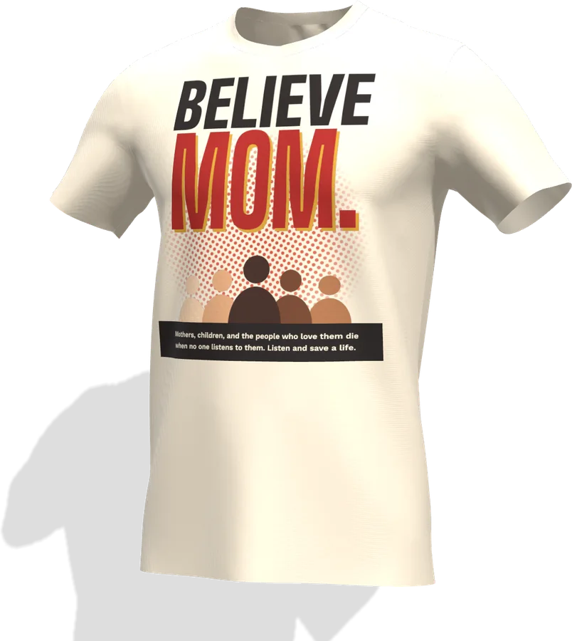
Drag the tee
Design direction (notes)
Built: "Street Print." Screen-printed flat color, halftones, and hand-lettered signs: the look of protest posters, church fans, and fair booths. It belongs at a rally and at a county fair, which is exactly where these clothes need to go.
Built inside it: "Altar" for the Honoring Leaders line, with candlelight, cloth, and gold foil. Veneration needs a different temperature than protest.
Considered: "Ledger." A historian's archive of stamped documents. Its stamps survive as our source labels.
01The ask
The Ask
The foundation wants every mom and child to have the chance to survive, no matter where they are born, and wants lives saved from causes we know how to prevent and treat. This proposal answers with a collection people will actually wear, a tour through six states, and a way to measure what works.
Two outcomes
Evidence on which maternal and child health messages draw attention and engagement, and which do not. And whether in-person events reach people digital channels miss, at what cost per person engaged.
Six states
Utah, Alabama, Michigan, California, South Florida, Louisiana. Indoor winter events, finished by the end of the first quarter of 2027.
Who we reach
Parents of younger children, faith communities and religious Republicans, and people who work in health care, plus every new audience a shirt can open.
01What we are up against
Up Against
No single villain. A stack of forces, each one pushing mothers further from care. The collection answers all of them.
Race
Black mothers died at about 3.2 times the rate of White mothers in 2024.
National Center for Health Statistics, Health E-Stat 113, March 2026 Verified
Coverage
New Medicaid work reporting rules could cost pregnant and postpartum women their coverage.
Georgetown Center for Children and Families, July 17, 2026 Reported
Distance
More than half of U.S. counties lack hospital labor and delivery services.
March of Dimes, August 11, 2026, via NPR Reported
Budgets
A 2026 budget proposal would eliminate Healthy Start and cut maternal and child programs.
First Focus, December 2025 (a proposal) Reported
Support at home
The U.S. got an F on paid leave and childcare in the 2026 maternal mental health report cards.
George Washington University, 2026 Reported
The environment
The air, water, land, and climate around a pregnancy shape how it ends.
BMJ systematic review, 2020 Reported
Who gets counted
Pregnancy and miscarriage in immigration custody are disputed by the government itself.
NPR, September 30, 2026; Guardian, September 15, 2026 Reported
Ideas
A growing argument that women should defer their votes and their decisions to men. See the case study.
Democracy Docket, April 2026; CBC, June 2026 Reported
Trust
Mothers are asked to trust systems that have not earned it. "Healthcare systems need to be more trustworthy." (Dr. Joia Crear-Perry; permission needed)
U.S. Commission on Civil Rights, November 13, 2020 Verified
01The strategy under every line
Answer to Her
People want safety, belonging, purpose, and a calling. Those needs are real, and they cross every party line. This collection offers all of them (protection, family, faith, a role that matters) with one difference.
Protection that answers to the mother.
Protect and provide, done for real, means care, money, safety, and a way out. Every line asks one question the people in power rarely answer. Invite people in. Contest harmful beliefs with evidence. Never mock anyone for what they were taught.
Believe MomWho listens?
Birthing People, All of UsWho is left out?
Family LineWho shows up?
Moms Don't Need to DieWho survives, and where?
Birth DecolonizedWhose knowledge counts?
Loving Earth, Our MotherWho pays for the damage?
Protect and ProvideWho answers to her?
Honoring LeadersWho already did the work?
Liner NotesWhat do we sing about her?
1. What belief does it expose?
2. Where does it end?
In a death or a denied care.
3. Who holds the power?
And what can they do this year?
01Say what it is. Say what it is not.
Defined
Many faith audiences hear "feminism" and "reproductive justice" as a rejection of God. We do not assume the words. We define them.
It is
"Reproductive justice is about the human right to bodily autonomy."
Monica Simpson, executive director, SisterSong, Ford Foundation profile ReportedPermission needed
A framework Black women named in 1994 (Ford Foundation profile, reporting Simpson's words).
The right to decide, with safety, money, care, and a way out.
It is not
Hatred of men. My line: "We don't hate men. We are scared of them, we have been hurt by them, and we want them to heal."
Abortion alone. It is the whole of a life: birth, staying alive after it, raising a child, and choosing when.
An attack on faith. We challenge the political use of faith to take away life-saving care. We do not attack believers.
"I need nobody." Reproductive justice is built on needing each other.
01Who can change this, this year
The Power
Health workers
Believe her the first time. Chart what she reports. Hold the line on staffing.
Nurses at UPMC Magee-Womens cited "nationally recognized staffing standards" (WESA, August 4, 2025).
Legislators
Protect 12 months of postpartum coverage from new paperwork losses. Keep maternal and child programs funded.
Medicaid work reporting rules raise coverage risks for pregnant and postpartum women (Georgetown, July 17, 2026). A 2026 budget proposal would eliminate Healthy Start (First Focus, December 2025).
Employers
Paid leave and childcare are maternal health.
The U.S. got an F on the new parental support measure, covering paid leave and childcare, in the 2026 maternal mental health report cards (George Washington University).
Faith leaders
Walk with families through every decision, as clergy did before.
More than 2,000 faith leaders in the Clergy Consultation Service, 1967 to 1973 (NBC News).
Voters
Keep your own vote. Ask every candidate about mothers.
Midterm elections, November 3, 2026.
02Who we design for
Everyone Born
Every person who walks up to our table has a birth story in their family, and a mother in it. We design for all of them.
Mothers and birthing people of every raceBelieve Mom, Moms Don't Need to Die
Black, Indigenous, Latina, Asian, and immigrant mothersBelieve Mom, Birth Decolonized
LGBTQIA+ parents and families of trans kidsBirthing People, All of Us; Family Line
Men, fathers, partners, grandfathersFamily Line, Birthing People
Grandmothers and eldersProtect and Provide (Our Grandmas), Birthing People (Abuela)
ChildrenKEEP MY MOM AROUND, family sets
Young people and studentsLiner Notes, Loving Earth
Health workers, doulas, midwivesBelieve Mom (Mothers' Keepers), Birth Decolonized
People of faith who support reproductive freedomProtect and Provide faith capsule
Faith communities and religious RepublicansOur Grandmas, Every Mother, Healthy Mothers
Disabled parentsBelieve Mom, Birthing People
Rural and farm familiesStrong moms rosettes, Loving Earth
Climate and earth advocatesLoving Earth, Our Mother
Music and pop culture fansLiner Notes, Honoring Leaders
For the funded pilot, every design also notes how it reaches the foundation's three groups: parents of younger children, faith communities and religious Republicans, and people who work in health care.
03Off the Syllabus · things most people were never taught
The Number
649
mothers died in the United States in 2024. A Black mother's risk was about 3.2 times a White mother's.
Section title options: Off the Syllabus (recommended: it says this is the class you should have had), The Fine Print, Unassigned Reading, What the Chart Left Out, Footnotes.
Black non-Hispanic
44.8
Asian non-Hispanic
18.1
Overall
17.9
White non-Hispanic
14.2
Hispanic
12.1
Maternal deaths per 100,000 live births, 2024.
03Off the Syllabus
What You Missed
Written into law
In 1964, Mississippi let people convicted of having children outside marriage choose sterilization in place of prison.
Mississippi Free Press, Michael Murphy, June 2021 Reported
Two girls, 1973
Mary Alice Relf, 12, and Minnie Relf, 14, were sterilized through a federally funded clinic in Montgomery, Alabama. Their mother was coerced into consent.
Mississippi Free Press, citing the case docket Reported
Clergy did this
From 1967 to 1973, more than 2,000 faith leaders in the Clergy Consultation Service helped more than 250,000 women obtain abortions.
NBC News, undated Reported
49 of 50
Every state except Arkansas now offers 12 months of postpartum coverage. New work reporting rules could still cost mothers that coverage.
Georgetown Center for Children and Families, February 27 and July 17, 2026 (headline and summary) Reported
One degree
In 70 studies across 27 countries, the odds of preterm birth rose about 5 percent for each 1°C of heat, and 16 percent during heatwaves.
Chersich et al., BMJ systematic review, 2020 Reported
Disabled mothers
In the United Kingdom, infants of disabled mothers had 44 percent higher odds of stillbirth or newborn death.
London School of Hygiene and Tropical Medicine and the Missing Billion Initiative, March 2025 (United Kingdom data) Reported
03Off the Syllabus
Still Missing
Dignity
In a 2022 United Kingdom survey, 28 percent of trans and nonbinary respondents were not treated with dignity in labor, against 2 percent of others. All four interviewees hid their gender to get care.
LGBT Foundation, ITEMS report, 2022 (not peer reviewed; not U.S. data) Reported
712 a day
About 260,000 mothers died worldwide in 2023, about 712 a day. Progress has slowed to 1.5 percent a year since 2016.
Trends in Maternal Mortality 2000 to 2023, United Nations interagency group, April 7, 2025, via United Nations Population Fund and UNICEF pages Reported
Who counts
The Department of Homeland Security says pregnancy was 0.15 percent of people in immigration custody. The Guardian reported the agency has lost track of miscarriages; the department says it tracks them monthly.
NPR, September 30, 2026; Guardian, September 15, 2026 Reported
No delivery room
More than half of U.S. counties lack hospital labor and delivery services. Midwives are suing southern states, including Alabama, over licensing.
March of Dimes report, August 11, 2026, via NPR Reported
Support works
Continuous one-on-one support in labor, from a partner, nurse, family member, or doula, made cesarean birth 25 percent less likely.
Bohren et al., Cochrane review, 2017, via Black Health explainer (low certainty on size) Reported
Graded F
The U.S. received an F on parental support, covering paid leave and childcare, in the 2026 maternal mental health report cards.
George Washington University, 2026 Reported
04Current context scan
The Moment
What is happening
Source
Why it matters to mothers and children
Emotion
A women's summit talks about giving up the vote
CBC, The Atlantic, The Nation, June 2026
A mother's voice folded into her household is a mother no lawmaker answers to.
Alarm
Women's suffrage questioned in Christian nationalist circles; a Defense Secretary reposts it
Democracy Docket, April 2026; PBS NewsHour
Faith is being used to argue who decides.
Anger, fear
Midterm elections
November 3, 2026 (general knowledge)
Every postpartum and maternal program is on a ballot somewhere.
Urgency
Medicaid work reporting rules
Georgetown, July 17, 2026
Paperwork can end coverage in the months when mothers die.
Anxiety
Budget proposal to eliminate Healthy Start, cut maternal and child block grants and the nutrition program for women, infants, and children
First Focus, December 2025 (a proposal)
The programs that catch mothers and babies are on the table.
Threat
649 deaths in 2024; the drop is not statistically significant
March of Dimes on federal data, March 2026
Nothing is fixed. Race gap unchanged.
Grief, resolve
U.S. gets an F on parental support
George Washington University, 2026
Paid leave and childcare are maternal health.
Recognition
Maternity care deserts and midwife lawsuits
March of Dimes, August 11, 2026, via NPR
Birth workers are fighting to practice.
Isolation, fight
Pregnancy and miscarriage in immigration custody
NPR, September 30, 2026; Guardian; disputed by the Department of Homeland Security
Who counts as a mother worth counting.
Moral outrage
Proposed federal rules on gender-affirming care for minors
Becker's Hospital Review, December 18, 2025 (proposed, not final)
Families of trans kids are afraid. "I care about my trans kid" is a public act now.
Fear, love
The environment and pregnancy
BMJ systematic review, 2020
The environment is already in the delivery room.
Dread
Disabled mothers' outcomes
London School of Hygiene and Tropical Medicine, March 2025 (United Kingdom); Michigan Council for Maternal and Child Health brief, September 2025
A coming conversation that has barely reached U.S. audiences.
Invisibility
Honest motherhood online
Ypulse on mothers on TikTok (undated)
The internet wants real, funny, tired moms. KEEP MY MOM AROUND speaks that language.
Relief, humor
Maternal health claimed by both sides
Washington Examiner and Notus headlines (headline only, per report v5)
We cannot only deny. We name the mothers and the policy.
Contest
Coming, not yet loud in the U.S.: disability and maternity data from the United Kingdom; "Safe Staffing = Safe Care" from the Royal College of Midwives (January 2026, listed); global progress stalling since 2016. TV and music moments: [SOURCE NEEDED] (search found nothing reliable for 2026).
04Opportunity and narrative map
The Openings
What is happening
What the brand can do
Dominant narrative
Narrative we build
A summit asks women to hand over their vote
Make the vote a maternal health issue
Protection means a man decides
Protection answers to her
Coverage at risk from paperwork
Recovery and postpartum designs at fairs and churches
Care ends at discharge
Recovery is a year; neighbors and laws carry it
Families of trans kids under federal pressure
Family Line and Birthing People pieces men and parents can wear
Trans care is a culture war
Loving your kid is family values
The environment in pregnancy and birth work
Loving Earth, Our Mother
The environment is someone else's issue
The environment is a maternal health issue
Faith used to justify control
Our Grandmas faith capsule
Faith equals anti-abortion
Faith has always walked with women
Moms online want honest humor
KEEP MY MOM AROUND children's line
Maternal death is unspeakable
A kid can say it, so we all can
Budget proposals target Healthy Start and maternal and child programs
Designs that show what the programs do
Programs are line items
Programs are mothers who came home
The U.S. graded F on paid leave and childcare
Family Line pieces at workplace and union events
Leave is a perk
Leave is how mothers survive
Midwives suing for the right to practice
Birth Decolonized and Mothers' Keepers at birth worker events
Midwives are a risk
Midwives fill the gaps hospitals left
Pregnancy in immigration custody, disputed by the government
Every Mother and 712 a Day as conversation pieces
Some mothers do not count
Every mother counts, everywhere
Disabled mothers' outcomes surfacing in United Kingdom data
Accessible designs (large type, tactile patches) with disabled-led review
Disability is an afterthought
Access is care
Families of trans kids choosing to speak up
I care about my trans kid, worn by parents and grandparents
Trans kids are a debate
Trans kids are family
Midterm elections, November 3, 2026
Pieces that put the people we love on the ballot
Voting is personal preference
Voting is how we answer to her
Black Maternal Health Week every April
A Believe Mom drop with honoree co-branding
One week a year
Every week, every mother
Race Class Narrative
Demos, Anat Shenker-Osorio, and Ian Haney López tested messages that name race and class together and call people to unite across race against those who divide them. Use it for Believe Mom.
Strategic Frame Analysis
FrameWorks Institute's research method for finding which frames help the public understand a social issue. Use it to test the faith and family lines.
Moral reframing
Messages framed in the audience's own moral values moved conservatives in one experiment (Feinberg and Willer, 2012). Use it for Protect and Provide.
05Case study: a conversation we could start
The Summit
One current, political, and dire moment this collection could start a conversation about. June 2026, San Antonio: at the Turning Point USA Women's Leadership Summit, several women said they would give up their right to vote if it meant a more conservative country.
"I vote the same way he does, so honestly, I would be okay with giving up my right to vote, because I know that he would represent me well."
Alexus DeGraaf, quoted by CBC ReportedPermission needed
"If my husband's the head of the household, I am the neck... I would be fine with that."
Brooke Foxworthy, quoted by CBC ReportedPermission needed
"I know for a fact that if women couldn't vote then abortion wouldn't be legal in the first place."
Stone promoted one vote per household, deferring to the husband's choice of candidate. Reported.
The Atlantic and CBC reported stronger support for women's suffrage among attendees than the speakers suggested. Reported.
A Nation reporter saw "No Voter ID, No Vote" stickers throughout the conference. Reported.
Democracy Docket reported in April 2026 that the idea that women should not vote is growing among Christian nationalists. Defense Secretary Pete Hegseth reposted a video of pastor Doug Wilson saying women should not vote (Democracy Docket, PBS NewsHour). Reported.
05Case study: in the room
Overheard
From my own video of the summit. The speakers are unlabeled, and these lines are attributed to no one. Speakers said feminism has hurt women and that women should marry early and have more children.
"Have more babies than you can afford."
"Feminism is the biggest lie we have ever been sold as women."
"Feminism is the pursuit of I need nobody."
"A lot of the left say that they don't need men. But we do."
"Women are controlled by their emotions and men are controlled by logic."
"Submission is a trust and it's teamwork... the woman serves the husband and the husband lays down his life for the wife."
And the women listening
"I've run three companies, and have a non-profit, and adopted children. So I feel like the messages to me were that women can do it all."
"That's what the Bible calls us to do, so that's what I think is true."
Attendees, unattributed.
Read them twice
These are not cartoons. They are people describing a calling, a partnership, a life that is more than one thing, and a definition of feminism they were handed and rejected. That sincerity is our opening.
05Case study: the logic on that stage
The Logic
The logic on that stage holds together. That is why it is dangerous. Five beliefs, one destination.
Protection means control.A woman is safest when a man decides for her.Ends at: She asks permission for her own care.
One voter per house.Her vote is folded into the household.Ends at: The laws about her body are written by people who never answer to her.
"Having it all."A personal achievement, not a question of who pays.Ends at: Care, childcare, safety, and health paid for by no one.
More babies.Birth as the answer, with no question about the cost.Ends at: Her body, money, and life spent without a plan. 649 mothers died in 2024.
God's order.Faith becomes a set of laws about who decides.Ends at: A state that writes the laws that let her die.
Underneath all five: the belief that the people who decide for mothers should not have to answer to them.
06The collection
The Lines
Twelve lines. Each one asks a question the people in power rarely answer. Tap a line to open it.
Believe Mom.KEEP MY MOM AROUND.EVERY MOTHER deserves to come home.HEALTHY MOTHERS.I keep moms safe. Ask me how.Mama Lives.Birth Decolonized.Running on mom time.Postpartum is public health.Care beyond delivery.Prenatal Care Is Not Optional.My Human Supports Maternal Justice.Believe Mom.KEEP MY MOM AROUND.EVERY MOTHER deserves to come home.HEALTHY MOTHERS.I keep moms safe. Ask me how.Mama Lives.Birth Decolonized.Running on mom time.Postpartum is public health.Care beyond delivery.Prenatal Care Is Not Optional.My Human Supports Maternal Justice.
6.1Product line
Believe Mom
Who listens?
The racial justice line, for mothers of every race. It holds Black mothers at the center of the evidence and every mother inside its promise. The health worker line lives here too: health workers are the people who can believe her first.
"Healthcare systems need to be more trustworthy."
Dr. Joia Crear-Perry, U.S. Commission on Civil Rights, November 13, 2020 VerifiedPermission needed
"Not valuing the lives of Black and Indigenous people is driving the maternal health crisis in the United States."
Dr. Joia Crear-Perry, same testimony VerifiedPermission needed
"When black people are advocating for our family members, we're complaining, we're being uppity."
Patrisse Cullors, STAT, December 7, 2017 ReportedPermission needed
"It's really about the history of this country of how we, as Black women, have not been heard."
Nadia Gramby, certified professional midwife, NPR, August 11, 2026 ReportedPermission needed
"EVERY mother, regardless of race, or background deserves to have a healthy pregnancy and childbirth."
Serena Williams, Facebook, January 15, 2018, as quoted by the Fader VerifiedPermission needed
"It's chronic stress that just happens all the time."
Subtitle (my wording): "Mothers, children, and the people who love them die when no one listens to them. Listen and save a life." The causal claim needs a source [SOURCE NEEDED]. Crear-Perry's testimony also says Black women in New York City are "eight to twelve times more likely to die of a pregnancy-related cause than white women."
6.1Believe Mom · headline poster and tee
Tee
Believe Mom
Line
Believe Mom
Subtitle
Mothers, children, and the people who love them die when no one listens to them. Listen and save a life.
Visual
BELIEVE over a red halftone sun. MOM. in red with a gold offset, like a misregistered screen print. Five mothers shoulder to shoulder in five skin tones, a Black mother at the center.
Audience and ask
For everyone who has been dismissed in a waiting room, and everyone who loves someone who was. Asks them to speak up and asks clinicians to act. Rallies, Black Maternal Health Week, every tour stop.
Narrative change
Today: a mother who raises an alarm is "complaining." This design: her word is the first evidence.
Cultural significance
Black women die at about 3.2 times the rate of White women (2024). Approval: Black maternal health partners in each state.
Risk
The causal claim in the subtitle needs a source before print. No named person on the product. Low platform risk. Fits grant terms.
Track
Both. The universal promise suits the pilot; the race-centered evidence suits our own line.
Design rationale
The halftone sun is the protest-poster grammar of the 1960s and 70s. Red for the record of deaths. The misregistration says hand-pulled, urgent, human.
ExposesThat she is overreacting.
Ends atA dismissed symptom, then a death.
PowerClinicians and hospital leaders: believe and chart her report this year.
6.1Believe Mom · seed line
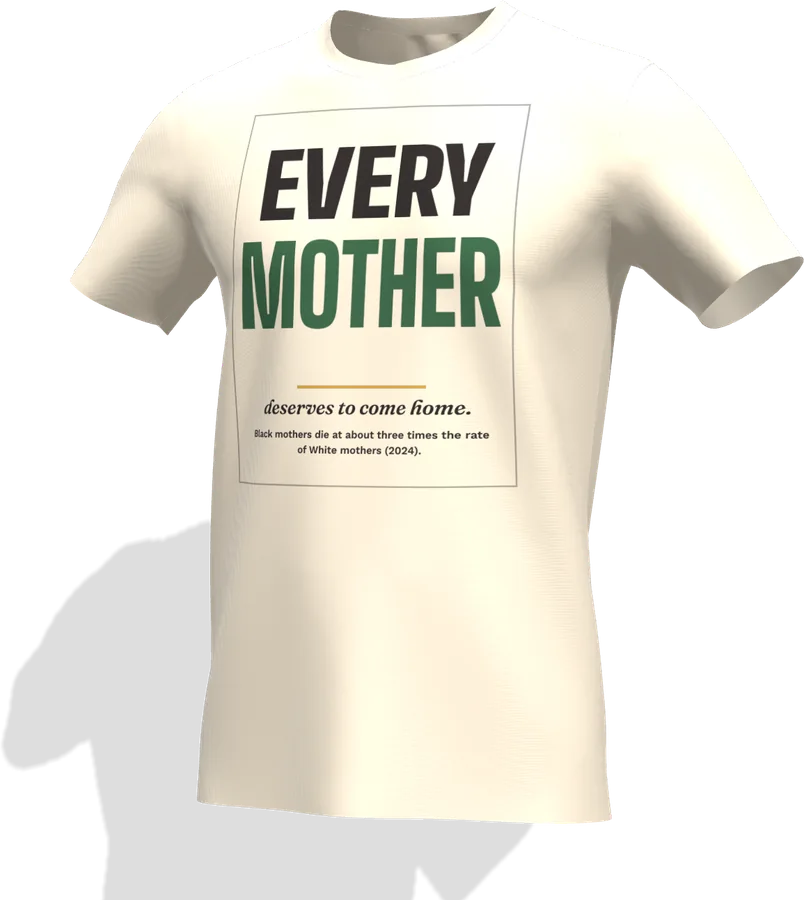
Tee
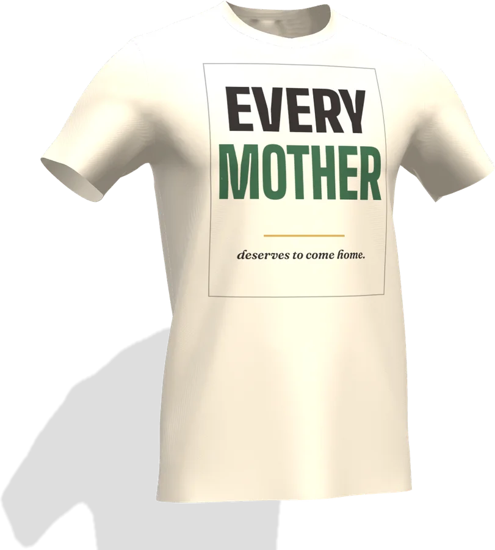
TeeRace named version
Every Mother
Line
Every Mother
Subtitle
Deserves to come home.
Visual
EVERY in black, MOTHER in deep green, framed like a hospital discharge card. A race-specific version adds one line on the 2024 Black and White death rates.
Audience and ask
For families, faith audiences, and health workers. Asks everyone to treat coming home from the hospital as the bare minimum. Fairs, churches, hospital-adjacent events.
Narrative change
Today: coming home is assumed. This design: it is not guaranteed, and it should be.
Cultural significance
Speaks across party and faith. The race line keeps the evidence honest about who does not come home.
Risk
The race version may read as partisan to some viewers. Test both versions side by side.
Track
Both. Universal version for the pilot; race version tested inside it.
Design rationale
The discharge-card frame turns a medical form into a promise. Green for growth and for going home.
ExposesThat every birth ends in a homecoming.
Ends atA mother who never leaves the hospital.
PowerHospitals and legislators: fund postpartum follow-up this year.
6.1Believe Mom · honoring quote
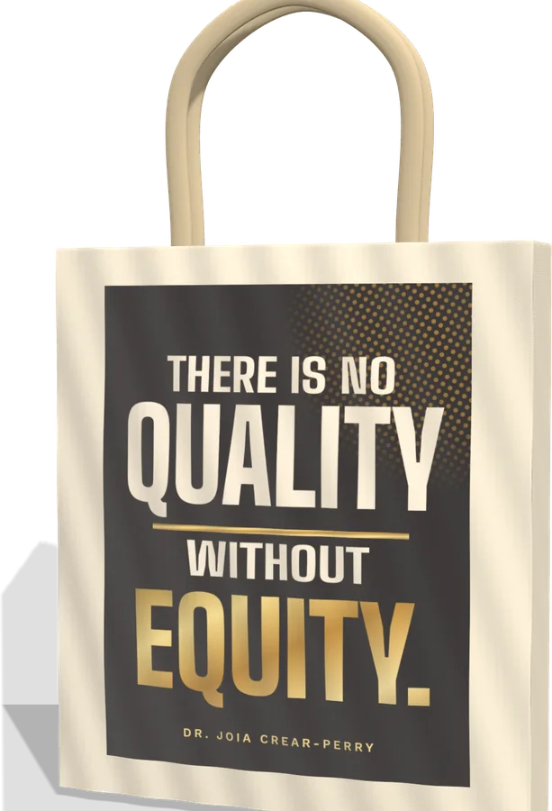
TotePoster
"There is no quality without equity."
Dr. Joia Crear-Perry, November 13, 2020 VerifiedPermission needed
No Quality
Line
No Quality
Subtitle
"There is no quality without equity."
Visual
THERE IS NO / QUALITY / WITHOUT / EQUITY. EQUITY in gold foil on black, under a gold halftone glow.
Audience and ask
For hospital leaders, clinicians, and funders. Asks them to measure quality by who is harmed. Conferences and health worker events.
Narrative change
Today: quality and equity are separate programs. This design: one standard.
Cultural significance
Dr. Joia Crear-Perry's words to the U.S. Commission on Civil Rights (Verified).
Risk
Permission needed from Dr. Joia Crear-Perry.
Track
Both.
Design rationale
Gold for honor. Type only, because her words are the design.
ExposesThat safety can be high on average.
Ends atAverages that hide who dies.
PowerHospital leaders: report outcomes by race this year.
Embroidered patch: cupped hands around a red heart, ringed by my sentence. Companion pieces: my seed tee "I keep moms safe. Ask me how." and a badge reel nurses wear on every shift.
Audience and ask
For nurses, midwives, doulas, and every health worker, and for the patients who see them. Asks staff to wear the promise and patients to ask about it.
Narrative change
Today: hospitals are where things go wrong. This design: the people inside are keeping mothers alive, and they can tell you how.
Cultural significance
Nurses at UPMC Magee-Womens anchored their organizing in staffing standards and patient care. Title options: Mothers' Keepers (recommended, straight from my sentence), On Watch, Keep Watch, Her Keepers, Night Shift.
Risk
Do not speak for an employer or union. Hospital dress codes apply to badge reels. Permission needed from the nurses before their words appear.
Track
Both. A strong pilot candidate for the health worker audience.
Design rationale
The patch is a uniform object: it goes on scrubs bags and jackets. The badge reel is the most-seen object in a hospital.
ExposesThat safety is a hospital's job, not a staffing choice.
Ends atToo few nurses on the night a mother bleeds.
PowerHospital leaders and legislators: safe staffing this year.
6.1Believe Mom · the pieces
The Pieces
Who listens?
01
Believe Mom
Halftone sun, five mothers, a Black mother at the center.
TeePilot and our line
02
I keep moms safe. Ask me how.
Worn on shift, read by every patient.
Healthcare worker face maskPilot and our line
03
Mothers' Keepers
Healthcare workers are our mothers' keepers.
Enamel pin, gold rim, metal clutchPilot and our line
04
Every Mother
Deserves to come home.
TeePilot and our line
05
No Quality Without Equity
Dr. Joia Crear-Perry. Permission needed.
TotePilot and our line
6.2Product line
Birthing People, All of Us
Who is left out?
LGBTQIA+ oppression is a maternal health issue. This line holds space for every gender identity touched by birth, which is every person on the planet. Products for all genders.
Subtitle options
Everyone was born. Everyone belongs in birth care. Recommended: it makes the universal case first and the inclusive case follows.
Safe birth care for every gender, every family.
No one gets left out of the room.
Queer, trans, and every one of us: birth is our issue.
Born, every one of us.
"We don't care about your acceptance or agreement. We just want equity and safe, inclusive care."
Kayden Coleman, transgender man, Houston, father of two, NBC News ReportedPermission needed
"Most of that came from inside the birthing world, with medical professionals."
"The experience of labor and delivery is so ... there's just so much invasion of people's bodies."
Davis Chandler, therapist, NBC News (ellipsis replaces a dash) ReportedPermission needed
United Kingdom 2022 survey: 28 percent not treated with dignity in labor, against 2 percent; all four interviewees hid their gender to get care. Not U.S. data; not peer reviewed; no race-specific claim. Open question: no readable U.S. study exists on queer parents' maternal care [SOURCE NEEDED].
6.2Birthing People, All of Us · headline
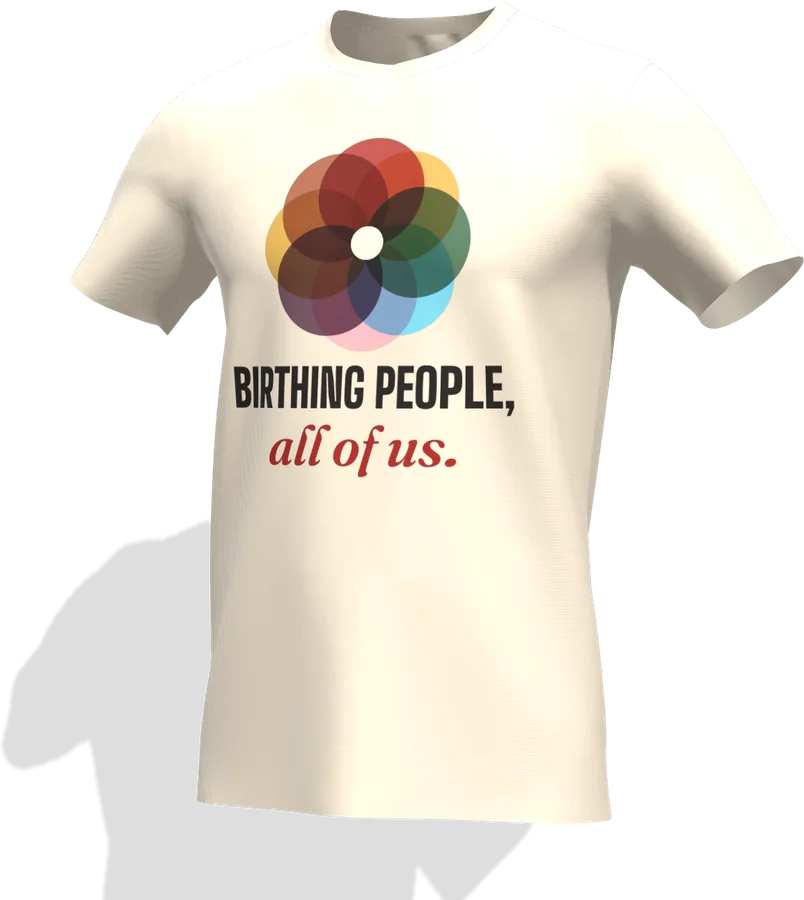
Tee
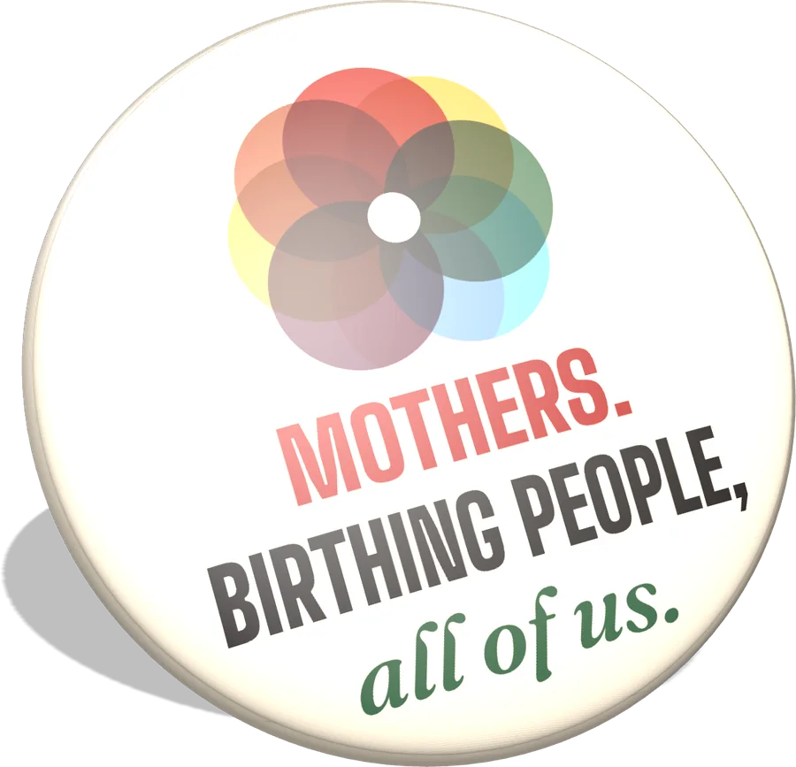
ButtonWith "mothers"
Birthing People, All of Us
Line
Birthing People, All of Us
Subtitle
Everyone was born. Everyone belongs in birth care.
Visual
Eight overlapping circles in many colors, laid with a multiply blend so every overlap makes a new color. One ring. Two versions: plain, and with MOTHERS. alongside for the pilot test.
Audience and ask
For LGBTQIA+ parents, their families, and anyone who wants birth care to include everyone. Pride events, campuses, rallies, and our shop.
Narrative change
Today: maternal care assumes one kind of parent. This design: care follows the birth, not the gender marker.
Cultural significance
Trans and nonbinary parents report hiding who they are to get care. The ring says no one has to.
Risk
The inclusive version may narrow reach with some faith audiences: that is the pilot's test. Check grant terms for the funder version.
Track
Both. "Mothers" alongside for the pilot; plain version for our line.
Design rationale
Overprinting is a screen-print truth: two inks make a third. Many identities, one ring.
ExposesThat birth care is for one kind of body.
Ends atA parent who hides to get care.
PowerHospitals: inclusive intake forms and training this year.
6.2Birthing People, All of Us · for whoever needs to wear it
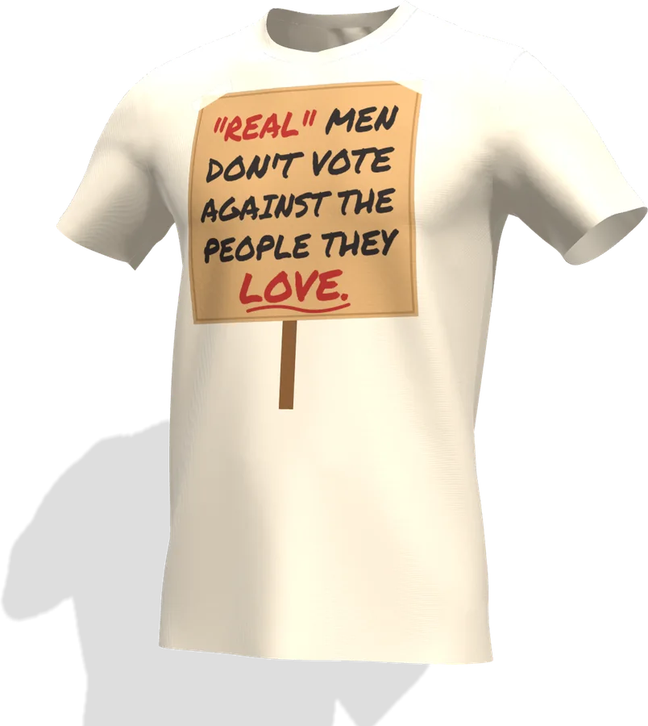
Tee
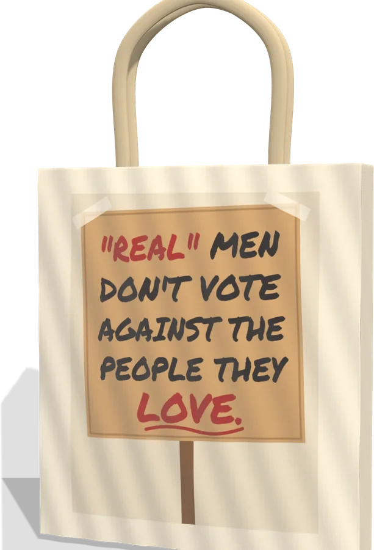
ToteProtest sign, also as a tee
"Real" Men
Line
"Real" Men
Subtitle
"Real" men don't vote against the people they love.
Visual
Hand-lettered cardboard protest sign, tape at the corners, "REAL" in red inside quotation marks, LOVE. underlined.
Audience and ask
For men and anyone tired of being told what a real man is. Asks voters to vote for the people in their family, all of them. Rallies, campuses, our shop.
Narrative change
Today: real men vote to protect a traditional family. This design: a man who loves his trans kid, his wife, his sister votes for them.
Cultural significance
The quotation marks quote the claim back to the people who make it. Readers often read quoted words as sarcasm, and that is the point.
Risk
Sarcasm can read as an attack on men. Political content: not for the funder version. Needs-review.
Track
Community Shop line.
Design rationale
Cardboard and marker are the materials of a real march. It must look carried, not designed.
ExposesThat a real man votes against his own family.
Ends atLaws that deny care to the people he loves.
PowerVoters: November 3, 2026.
6.2Birthing People, All of Us · bilingual tee
Bilingual tee
Spanish text needs review by a native speaker.
Abuela
Line
Abuela
Subtitle
Ya lo sabía la abuela.
Visual
ABUELA KNEW MUTUAL AID under a string of cut-paper banners in marigold, rose, green, sky, and gold on indigo.
Audience and ask
For Latina families, grandmothers, and anyone raised by one. Asks people to see the elder woman as the original organizer, in her own language. South Florida, California, Michigan tour stops.
Narrative change
Today: mutual aid sounds new. This design: abuela was already moving money, food, rides, and childcare before any institution did.
Cultural significance
"All of us" includes every generation and every language touched by birth. Original take, inspired by Mexican papel picado. Consult Mexican and Chicana artists before use.
Risk
Spanish text needs review by a native speaker. "Mutual aid" may read as left-leaning to some. Do not claim a specific network without a source.
Track
Both.
Design rationale
Papel picado is celebration made by hand. Indigo is night, the banners are a fiesta.
ExposesThat care only comes from institutions.
Ends atFamilies with no network when the system fails.
PowerCommunity groups and funders: back elder-led networks this year.
6.2Birthing People, All of Us · the pieces
The Pieces
Who is left out?
01
Birthing People, All of Us
Many inks overprinting into one ring.
TeePilot and our line
02
ABUELA KNEW MUTUAL AID
Ya lo sabía la abuela. Spanish text needs review by a native speaker.
Bilingual teePilot and our line
03
Mothers. Birthing People.
The pilot tests both words side by side.
ButtonPilot and our line
04
"Real" Men
"Real" men don't vote against the people they love.
ToteOur line
6.3Product line
Family Line
Who shows up?
Products for families to wear together, every age and size, and products for men, or whoever feels the need to wear them.
"I call these the 21st century fathers."
Peter Bullock, founder, Hey Black Dad, New Jersey. Advocates for Children of New Jersey, June 12, 2024 ReportedPermission needed
"I'm more of a man than I've ever been in my life because of this."
Omari Maynard, founder, ARIAH Foundation. Boston Medical Center and HealthCity ReportedPermission needed
"Often men feel like they can't speak up because they don't have a voice, or as men we are taught to be tough."
Bruce McIntyre III, birth justice advocate. Boston Medical Center ReportedPermission needed
Their partners' deaths are personal. Use only their public statements.
6.3Family Line · seed line, children and family set
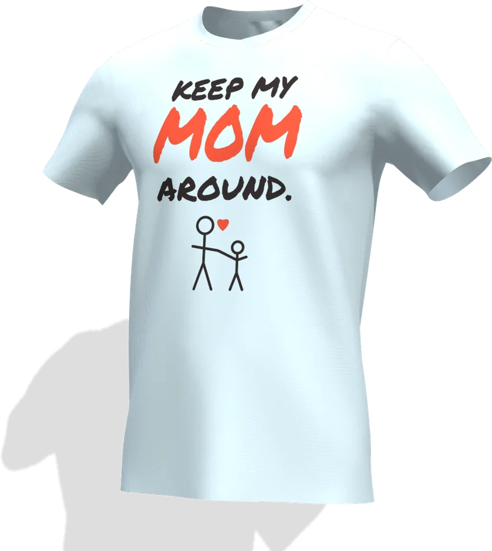
TeeFamily set: grandparent, parent, childFamily set
Keep My Mom Around
Line
Keep My Mom Around
Subtitle
A kid says what grown-ups cannot.
Visual
Hand-lettered, crayon-loose: KEEP MY / MOM / AROUND. with a stick-figure kid holding a parent's hand. A family set: grandparent, parent, and child shirts in plum, sky, and butter.
Audience and ask
For parents of young children and everyone who loves a mom. Asks onlookers to smile, then ask what it means. Fairs, home shows, playgrounds, every photo of the kid wearing it.
Narrative change
Today: maternal death is unsayable at a family event. This design: a child's wish makes it sayable anywhere.
Cultural significance
Honest, funny motherhood is how moms talk online right now. No political or religious coding.
Risk
A few may find humor about maternal death flip. Children's product safety rules apply.
Track
Both. A lead pilot candidate for parents of young children.
Design rationale
Kid handwriting is the voice of the message. Soft colors keep it a family object, not a protest object.
ExposesThat moms will be fine.
Ends atA kid who grows up without her.
PowerEveryone: check on new moms; legislators: keep postpartum coverage.
6.3Family Line · for men
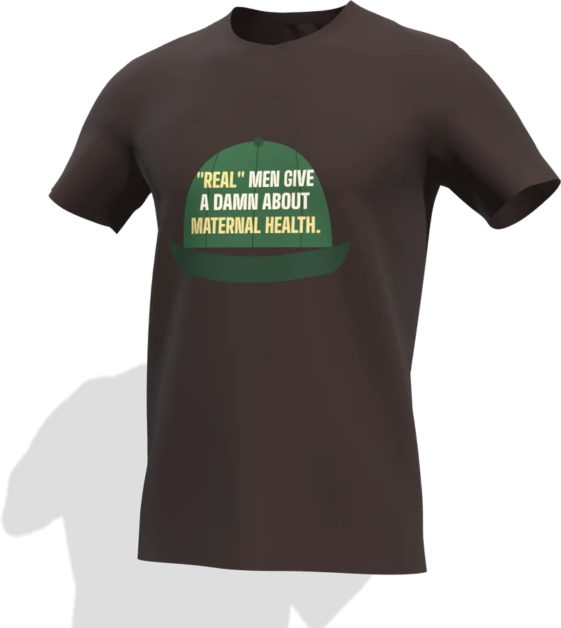
TeeDad cap
"Real" Men
Line
"Real" Men
Subtitle
"Real" men give a damn about maternal health.
Visual
Embroidered dad cap in deep green. "REAL" in gold inside quotation marks.
Audience and ask
For men, fathers, and partners. Asks them to show up for prenatal visits, postpartum, and the vote. Sports events, fairs, our shop.
Narrative change
Today: birth is women's business. This design: the men who love her are in it.
Cultural significance
Speaks to the "21st century fathers" Peter Bullock describes. Needs-review: the quotation marks must stay.
Risk
Sarcasm risk. Test "Dads" and "Everyone" in its place for the pilot.
Track
Community Shop line; a "Dads" version could be tested in the pilot.
Design rationale
The dad cap is the most-worn men's merch object. Embroidery says permanent.
ExposesThat caring is not manly.
Ends atA partner who did not know the warning signs.
PowerMen: learn the signs and show up this year.
6.3Family Line · for whoever needs to wear it
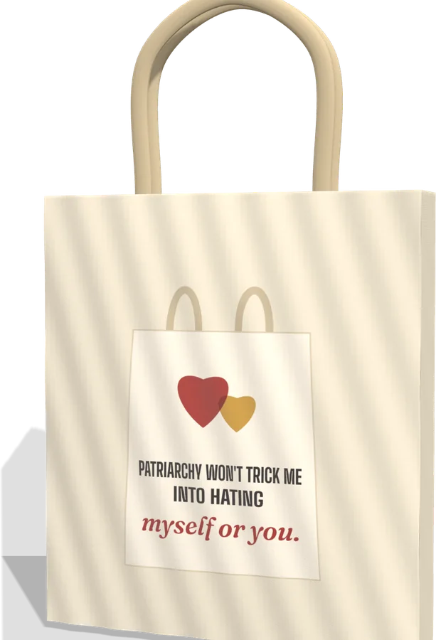
Tote
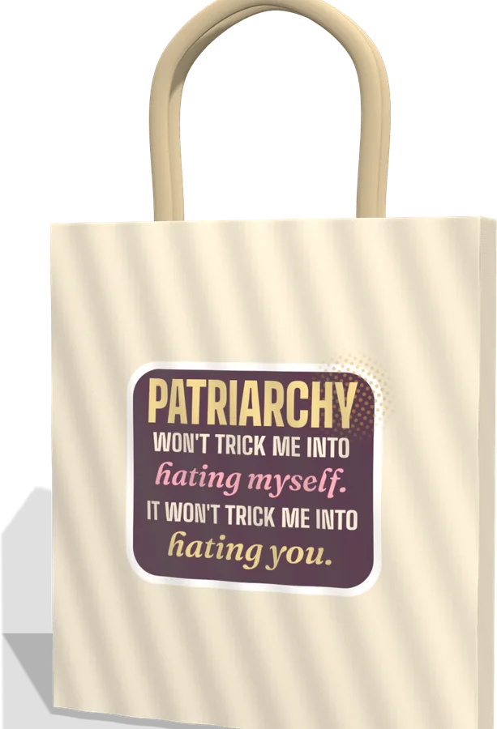
ToteStickerTote
Patriarchy
Line
Patriarchy
Subtitle
Patriarchy won't trick me into hating myself or you.
Visual
Die-cut plum sticker with the two-sentence version, and a canvas tote with two overlapping hearts, large and small, over the short version.
Audience and ask
For men and anyone undoing what they were taught. Laptops, water bottles, tote bags at the market.
Narrative change
Today: the system sets men against women and parents against kids. This design: it will not work on me.
Cultural significance
A personal vow, so it is safe to wear as an individual and not a slogan aimed at anyone.
Risk
"Patriarchy" may read as progressive. Our line, not the pilot.
Track
Community Shop line.
Design rationale
Stickers spread fastest. Plum and gold make it feel like a badge of honor, not a scold.
ExposesThat we must distrust each other.
Ends atFamilies split by a story about who rules.
PowerEach of us, this year.
6.3Family Line · parents of trans kids
Button
Trans Kid
Line
Trans Kid
Subtitle
I care about my trans kid.
Visual
Round pin in the colors of the Transgender Pride Flag, light blue, pink, and white, with the words in black.
Audience and ask
For parents, grandparents, and anyone who loves a trans kid. Asks people to say it out loud. Pride events, school events, our shop.
Narrative change
Today: trans kids are a political argument. This design: they are somebody's kid.
Cultural significance
Federal proposed rules on gender-affirming care for minors (Becker's, December 18, 2025) make this a public act of love. Verify the flag's use terms with its designer's published statements before print.
Risk
Our line. Platform and vendor rules generally allow it; check each event.
Track
Community Shop line.
Design rationale
A pin is worn over the heart. The flag colors do the explaining.
ExposesThat loving a trans kid is political.
Ends atA child denied care.
PowerParents and voters: speak up this year.
6.3Family Line · the pieces
The Pieces
Who shows up?
01
Keep My Mom Around
The same line in every size.
Family set: grandparent, parent, childPilot and our line
02
I care about my trans kid.
Worn over the heart.
ButtonOur line
03
Patriarchy
Patriarchy won't trick me into hating myself or you.
ToteOur line
6.4Product line
Moms Don't Need to Die
Who survives, and where?
The global line. Keep the sentiment, shorten the words.
Shorter title options
Mama Lives. Recommended: two words, a statement of fact we are making true, and "mama" is a word families across many languages use.
Moms Live.
Mothers Live.
Live, Mama.
Stay, Mama.
No Mom Dies Quiet.
Come Home, Mama.
She Lives.
Subtitle: "Every country. Every mother." My seed line "HEALTHY MOTHERS" lives here too.
"the voices of frontline health workers mainly midwives to be heard and included at all levels of decision making."
Angela Nguku, National Coordinator, White Ribbon Alliance Kenya, speaker profile, November 11, 2019 ReportedPermission needed
About 260,000 mothers died in 2023 worldwide: about 712 a day. Down from 443,000 in 2000. Sub-Saharan Africa: about 70 percent. Countries in conflict or fragility: 64 percent.
6.4Moms Don't Need to Die · headline
Tee
Mama Lives
Line
Mama Lives
Subtitle
Every country. Every mother.
Visual
MAMA LIVES. stacked over a gold wireframe globe filled with halftone dots, on deep green.
Audience and ask
For everyone, here and abroad. Asks them to hold mothers in other countries and down the street as one promise. Every tour stop.
Narrative change
Today: maternal death is far away. This design: survival is a promise to every mother, everywhere.
Cultural significance
Global progress has slowed since 2016. The line refuses to let that become normal.
Risk
Low. Non-partisan. Works for the foundation's "no matter where they're born" frame.
Track
Both. A lead pilot candidate.
Design rationale
Green for growth and life. The wireframe globe draws the world without singling out any country.
ExposesThat some mothers are expected to die.
Ends at712 deaths a day.
PowerGlobal health funders and voters: protect global maternal health funding this year.
6.4Moms Don't Need to Die · data poster
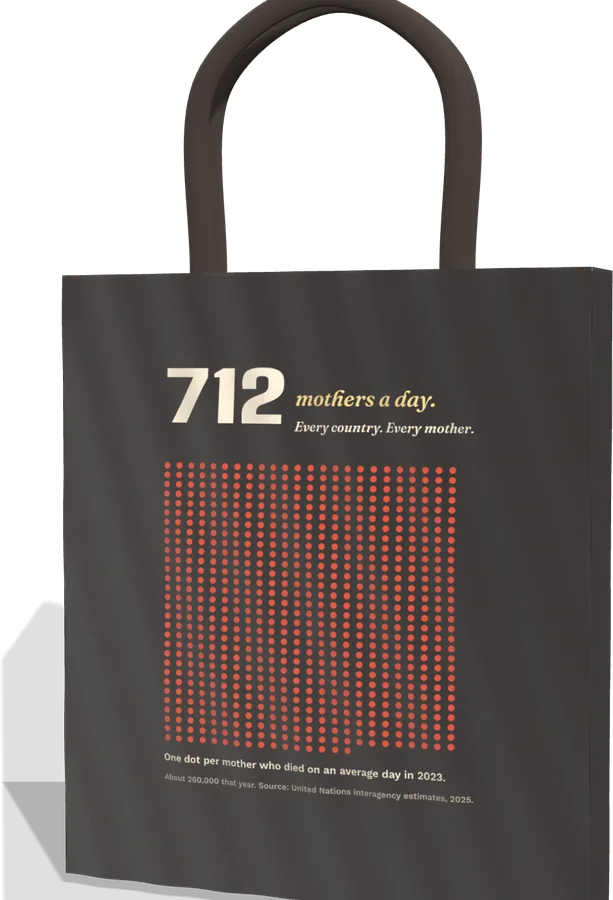
Tote
712 a Day
Line
712 a Day
Subtitle
One dot per mother who died on an average day in 2023.
Visual
712 red dots on black, drawn to count. No other image.
Audience and ask
For anyone who thinks the number is abstract. A poster for the stall wall and a tote.
Narrative change
Today: 260,000 is a statistic. This design: count them.
Cultural significance
Most of these deaths were in Sub-Saharan Africa and in countries in conflict.
Risk
Heavy at a family event: place it at the back wall, not the front.
Track
Both.
Design rationale
A death count should be drawn to scale. Red for the record.
ExposesThat progress is inevitable.
Ends atA stalled decline.
PowerFunders: keep the commitment this year.
6.4Moms Don't Need to Die · seed line
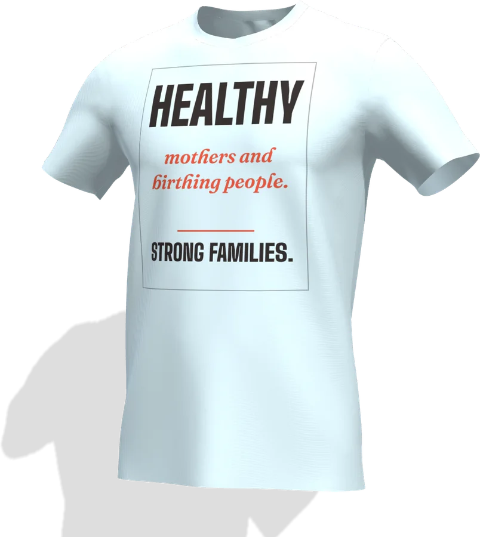
Tee
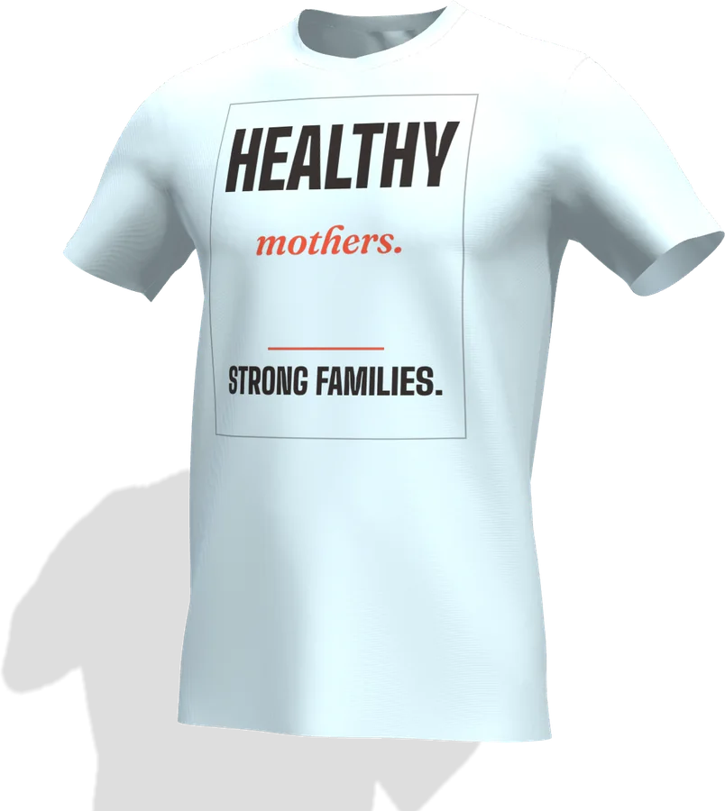
TeeMothers and birthing people
Healthy Mothers
Line
Healthy Mothers
Subtitle
Strong families.
Visual
HEALTHY in heavy black, "mothers." in red italic, STRONG FAMILIES. at the base, on sky blue. A second version says "mothers and birthing people" for the pilot test.
Audience and ask
For parents, faith communities, and health workers. A plain value nobody argues with. Fairs, churches, home shows.
Narrative change
Today: maternal health is a niche issue. This design: it is what strong families are built on.
Cultural significance
A shared value across party and faith.
Risk
Very low. The test of "mothers" against "mothers and birthing people" is the pilot's question.
Track
Both. A lead pilot candidate.
Design rationale
Sky blue reads calm and civic. The italic makes "mothers" feel spoken, not printed.
ExposesThat a mother's health is private.
Ends atA family without her.
PowerEmployers: paid leave this year.
6.4Moms Don't Need to Die · the pieces
The Pieces
Who survives, and where?
01
Mama Lives
Every country. Every mother.
TeePilot and our line
02
HEALTHY MOTHERS
Strong families.
TeePilot and our line
03
712 a Day
One dot per mother lost on an average day in 2023.
TotePilot and our line
6.5Product line
Birth Decolonized
Whose knowledge counts?
Honoring knowledge from and histories of birth workers who have been doing this from the start: midwives, grandmothers, community birth attendants. The same knowledge cared for the land, the water, and the plants. Caring for "mother earth" was part of birth work, and it carries into Loving Earth, Our Mother.
"We didn't forget that knowledge. We stopped doing it, and knowledge comes back through the doing."
Katsi Cook, Mohawk midwife, founding member, National Council of Indigenous Midwives. Center for Health Journalism, March 13, 2026 ReportedPermission needed
"The maternal health crisis in Indian Country is an invisible issue that can no longer be overlooked."
"It was the old way and it was so calm and beautiful ... every birth should be like that."
Shavonne Stevens, Seneca Nation (ellipsis replaces a dash) ReportedPermission needed
Reckon, February 2023, on Onnie Lee Logan, author of Motherwit: "Logan, who'd been delivering babies for 35 years, would be the last midwife in Mobile County." (The article's words, not hers.) Beatrice Borders "delivered hundreds of babies as a midwife in rural Georgia in the first half of the 20th century" (caption words). Indigenous and Black midwives define "decolonized," not us. Say "women-led knowledge," not "matriarchal."
6.5Birth Decolonized · headline poster
Tote, all-over quilt panelTee, quilt panel print
Birth Decolonized
Line
Birth Decolonized
Subtitle
Honoring knowledge from and histories of birth workers who have been doing this from the start.
Visual
A pieced quilt of half-square triangles in red, gold, green, indigo, clay, and cream, with stitched seams and a stitched center panel.
Audience and ask
For birth workers, families, and historians. Asks people to see community birth knowledge as expertise. Birth worker events, Black Birth Matters, our shop.
Narrative change
Today: birth became safe when it moved to hospitals. This design: it was already held by women who knew what they were doing.
Cultural significance
Original take, inspired by Black Southern quilting traditions. Consult Black quilters and textile historians before use. The word "decolonized" must be defined by Indigenous and Black midwives.
Risk
Do not present herbalism claims without a historian. Our line first; test carefully in the pilot.
Track
Community Shop line.
Design rationale
A quilt is knowledge you can touch, passed hand to hand, the same way birth work was.
ExposesThat expertise begins with licenses.
Ends atMidwives pushed out; counties with no delivery room.
PowerLegislators: midwife licensing reform this year.
6.5Birth Decolonized · honoring quote
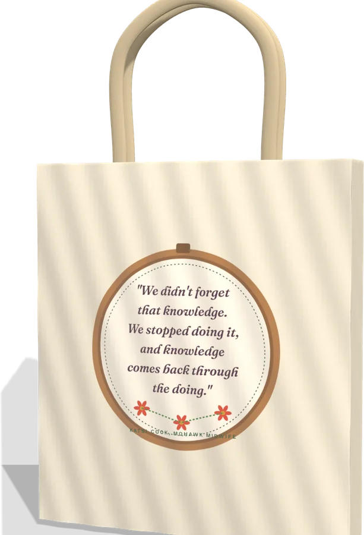
ToteHoop and tote
Through the Doing
Line
Through the Doing
Subtitle
"We didn't forget that knowledge. We stopped doing it, and knowledge comes back through the doing."
Visual
Katsi Cook's words stitched inside a wooden embroidery hoop, with three small stitched flowers.
Audience and ask
For Indigenous families, midwives, and doulas. A wall piece and a tote.
Narrative change
Today: traditional knowledge is lost. This design: it comes back through practice.
Cultural significance
Indigenous consultation required before any use. An embroidery hoop is women-led craft, not a sacred symbol.
Risk
Permission needed from Katsi Cook.
Track
Community Shop line.
Design rationale
Stitching is "the doing" made visible.
ExposesThat knowledge only lives in institutions.
Ends atCommunities without their own birth workers.
PowerFunders: pay Indigenous midwives this year.
6.5Birth Decolonized · the pieces
The Pieces
Whose knowledge counts?
01
Birth Decolonized
Original take, inspired by Black Southern quilting. Consult quilters before use.
The environment is a maternal health issue. We call her Mother Earth so we don't feel bad when we take more than she has to give us.
6.6Loving Earth, Our Mother · new line
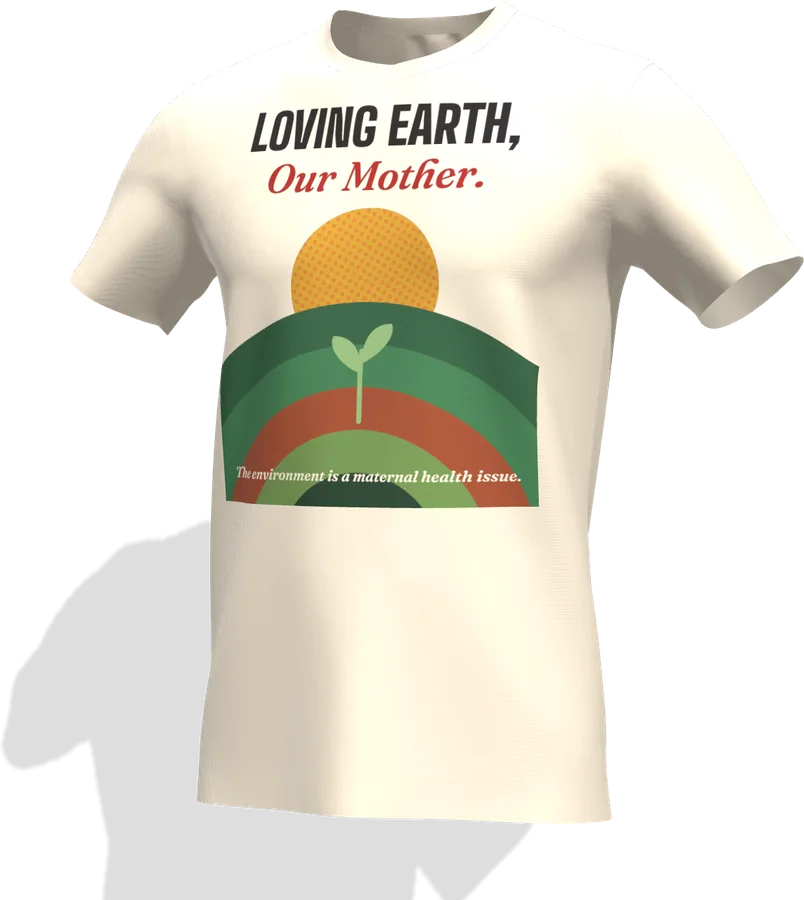
Tee
Loving Earth, Our Mother
Line
Loving Earth, Our Mother
Subtitle
The environment is a maternal health issue.
Visual
A gold sun over layered earth in greens and clay, with a seedling rising.
Audience and ask
For climate advocates, young people, rural families, and faith communities who speak of stewardship. Asks them to see the air, water, land, and climate as part of every pregnancy.
Narrative change
Today: the environment is someone else's issue. This design builds: "We call her Mother Earth so we don't feel bad when we take more than she has to give us."
Cultural significance
"Earth as mother" is a specific teaching in many Indigenous communities. It is shown here as a question for those communities, not a settled meaning.
Risk
Indigenous consultation required for the name. Claims must be cited.
Track
Both.
Design rationale
Green for growth and the earth. The sun is both life and heat.
ExposesThat the environment and birth are separate.
Ends atMothers and babies carrying the cost of what was taken.
PowerLocal governments and employers: protect pregnant people from environmental harm this year.
6.6Loving Earth, Our Mother · my line
Tote
Mother Earth
Line
Mother Earth
Subtitle
We call her Mother Earth so we don't feel bad when we take more than she has to give us.
Visual
A green globe with a wedge carved out and pulled away, the cut showing raw clay. MOTHER EARTH in gold.
Audience and ask
For anyone who has said "Mother Earth" without thinking about what it means. Totes for markets, campuses, and climate events.
Narrative change
Today: calling her mother makes the taking sound loving. This design: we took more than she had to give, and mothers pay first.
Cultural significance
"Earth as mother" is a specific teaching in many Indigenous communities. Show this line to Indigenous leaders before use.
Risk
Indigenous consultation required. Not partisan.
Track
Both.
Design rationale
The missing wedge is the whole argument: you can see exactly what was taken.
ExposesThat a mother gives without limit.
Ends atDepleted land, air, and water, and the mothers living on it.
PowerEveryone: take less; leaders: protect pregnant people from environmental harm this year.
6.6Loving Earth, Our Mother · the pieces
The Pieces
Who pays for the damage?
01
Mother Earth
A globe with a wedge carved out.
TotePilot and our line
02
Loving Earth, Our Mother
The environment is a maternal health issue.
TeePilot and our line
6.7Product line
Protect and Provide
Who answers to her?
The challenge line. It takes the summit's own words and asks who the protection answers to. It challenges the faith claim that God's order lets anyone write laws that keep mothers from life-saving care, and the claim that a household is safer with one vote. Real protection is care, money, safety, and a way out. It carries a faith capsule for people who are religious and support abortion rights. Picture a row of older women faith leaders wearing these at the next rally to protect abortion rights.
"walk with folks throughout all of their reproductive decisions."
Rev. Angela Williams, Presbyterian Church (U.S.A.), lead organizer of SACReD. NBC News ReportedPermission needed
"Judaism has always been pro-choice."
Rabbi Mara Nathan, Temple Beth-El, San Antonio, the summit's own city. NBC News ReportedPermission needed
"There's theological diversity within and among faith traditions ... there is no singular point of view."
Rev. Katey Zeh, chief executive officer, Religious Coalition for Reproductive Choice (ellipsis replaces a dash) ReportedPermission needed
Share who say abortion should be legal in all or most cases
Religiously unaffiliated
82%
Black Protestants
68%
Catholics
57%
White evangelical Protestants
24%
Rabbi Danya Ruttenberg, National Council of Jewish Women: abortion justice is supported "not despite our religious values but because of them." More than 1,600 rabbis pledged with Rabbis for Repro (reported; verify). Clergy Consultation Service, 1967 to 1973: more than 2,000 faith leaders, more than 250,000 women helped.
6.7Protect and Provide · challenge poster
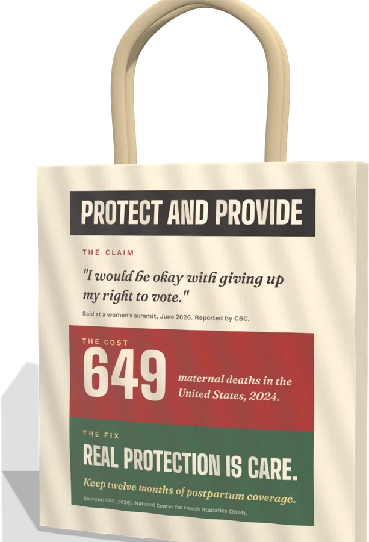
TotePoster
Protect and Provide
Line
Protect and Provide
Subtitle
Real protection is care.
Visual
Three bands like a church bulletin turned evidence board: THE CLAIM (a verbatim summit line), THE COST (649 maternal deaths in 2024), THE FIX (keep twelve months of postpartum coverage).
Audience and ask
For people of faith and voters who believe in protecting families. Asks them to judge protection by what it does for her.
Narrative change
Today: protection means a man decides. This design: protection that does not answer to her is not protection.
Cultural significance
The attendee is not named on the product: the claim is attributed to "a women's summit, reported by CBC." Name the policy, not the person.
Risk
Named public figures on products need my decision and a check against the original reporting. Political content: our line.
Track
Community Shop line.
Design rationale
Claim, cost, fix is a sermon structure: the text, the lesson, the charge.
ExposesThat a woman is safest when a man decides.
Ends atA mother with no say in her own care.
PowerVoters and legislators: November 3, 2026.
6.7Protect and Provide · the definition
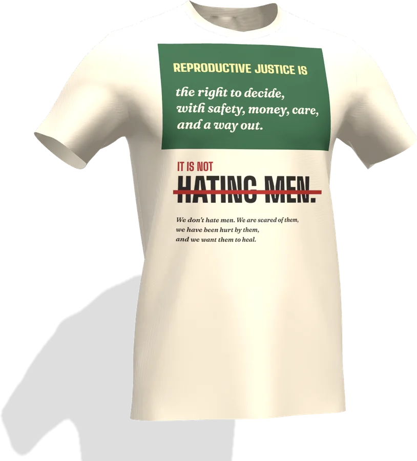
Tee
Is, Is Not
Line
Is, Is Not
Subtitle
The right to decide, with safety, money, care, and a way out.
Visual
Green top: what reproductive justice is. Cream bottom: IT IS NOT HATING MEN., struck through in red, with my line beneath.
Audience and ask
For faith audiences who were told feminism hates men and God. Asks them to read the definition for themselves. Church-adjacent events, rallies, our shop.
Narrative change
Today: "feminism is the biggest lie" (summit stage, unattributed). This design: here is what it actually is.
Cultural significance
My own words carry the "is not." Simpson's definition anchors the "is."
Risk
Low. A definition, not an attack.
Track
Both, with care.
Design rationale
A strike-through is the oldest editing mark: we are correcting the record in public.
ExposesThat feminism is a war on men.
Ends atWomen who will not ask for help.
PowerFaith leaders: teach the definition this year.
6.7Protect and Provide · faith capsule
Church hand fan
Our Grandmas Were Organizers
Line
Our Grandmas Were Organizers
Subtitle
Honors elders as the original organizers.
Visual
A church hand fan: red rim, gold rays, OUR GRANDMAS were ORGANIZERS. on a wooden handle.
Audience and ask
For elder women of faith and the families they raised. Rallies, church events, our shop.
Narrative change
Today: church women are the base of the opposition. This design: they were the organizers all along.
Cultural significance
The church fan is a familiar object in many Southern congregations, especially Black churches.
Risk
Low.
Track
Both.
Design rationale
A fan is held in the hand at every service. It turns devotion into a placard.
ExposesThat faith requires control.
Ends atA mother denied care in God's name.
PowerFaith leaders: speak and walk with families this year.
6.7Protect and Provide · faith capsule
TeeDesign
Front Pew
Line
Front Pew
Subtitle
Ask the one at the front of the church.
Visual
A church seen from the back pews, stained glass glowing, one elder in a gold church hat in the front row.
Audience and ask
For the front-pew elder, designed as a question that invites people to ask her what she knows.
Narrative change
Today: the front pew stands for tradition. This design: it stands for wisdom about choices.
Cultural significance
The front pew is a seat of respect.
Risk
Low.
Track
Both.
Design rationale
Stained glass in red, gold, and green ties the line to the palette of honor and life.
ExposesThat faith requires control.
Ends atA mother denied care in God's name.
PowerFaith leaders: speak and walk with families this year.
6.7Protect and Provide · faith capsule
TeeDesign
Clinic Escort
Line
Clinic Escort
Subtitle
Ask the One at the Abortion Clinic.
Visual
Back of a marigold shirt with reflective bands, made for the elder who escorts.
Audience and ask
For faith elders who escort patients. Worn at clinics and rallies.
Narrative change
Today: people of faith stand outside clinics in protest. This design: they walk patients in.
Cultural significance
Escorting is care work with a long faith history.
Risk
Clinic escorts can face harassment: include a safety note. Verify current clinic-access law, including the Freedom of Access to Clinic Entrances Act, before printing. Vendor rules and platform policy apply.
Track
Community Shop line.
Design rationale
Marigold and reflective bands borrow from escort vests: visible, calm, protective.
ExposesThat faith requires control.
Ends atA mother denied care in God's name.
PowerFaith leaders: speak and walk with families this year.
6.7Protect and Provide · faith capsule
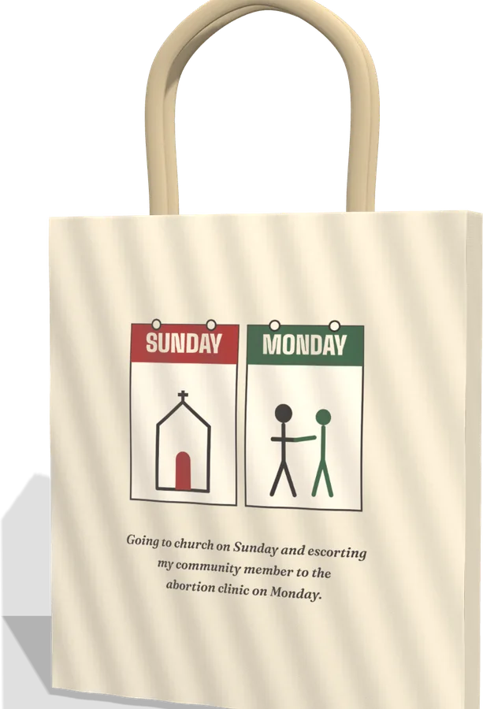
ToteDesign
Sunday, Monday
Line
Sunday, Monday
Subtitle
Going to church on Sunday and escorting my community member to the abortion clinic on Monday.
Visual
Two calendar pages: Sunday with a church in red, Monday with two people walking together in green.
Audience and ask
For people whose faith and their care for neighbors are the same thing.
Narrative change
Today: you must choose faith or choice. This design: the same person does both, every week.
Cultural significance
Says out loud what many believers live quietly.
Risk
Same safety note and legal check as the escort shirt.
Track
Community Shop line.
Design rationale
The calendar makes it routine, not radical.
ExposesThat faith requires control.
Ends atA mother denied care in God's name.
PowerFaith leaders: speak and walk with families this year.
6.7Protect and Provide · faith capsule
Tee
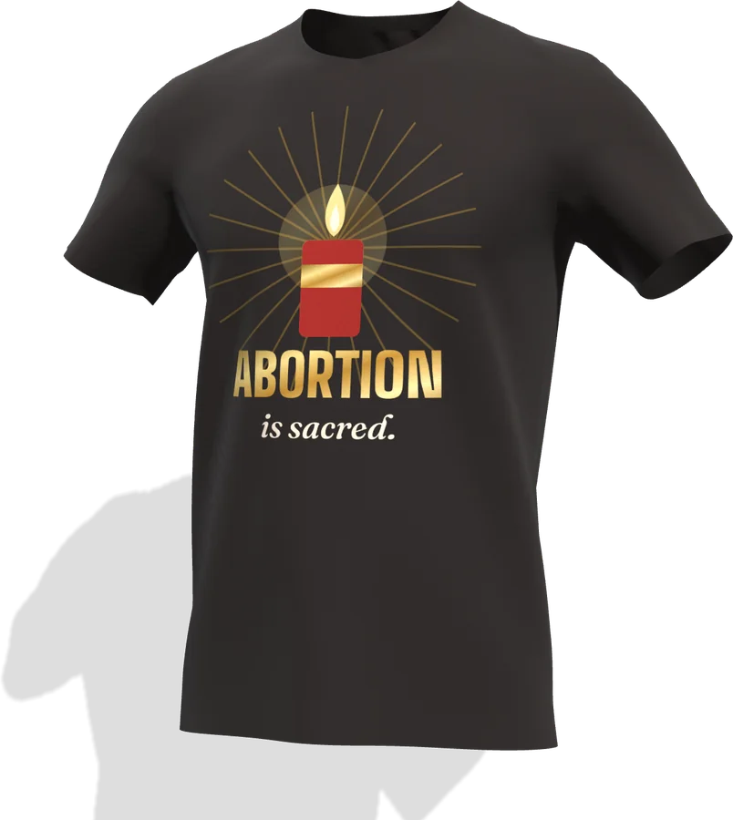
TeeVersion AVersion B
Sacred
Line
Sacred
Subtitle
"Abortion is Sacred." or "Birth is Sacred and abortion is too."
Visual
A votive candle with gold rays on black. Two versions to test.
Audience and ask
For religious people who support abortion rights. Rallies and faith gatherings.
Narrative change
Today: only birth is sacred. This design: the decision is sacred too.
Cultural significance
Devotional imagery used for its meaning, not as decoration.
Risk
Some will read it as provocation. Test both versions. Our line.
Track
Community Shop line.
Design rationale
Candlelight is prayer. Gold is honor.
ExposesThat faith requires control.
Ends atA mother denied care in God's name.
PowerFaith leaders: speak and walk with families this year.
6.7Protect and Provide · faith capsule
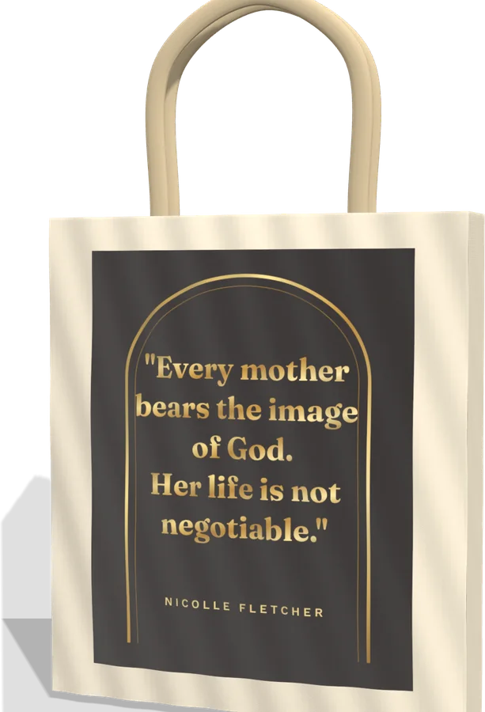
Tote
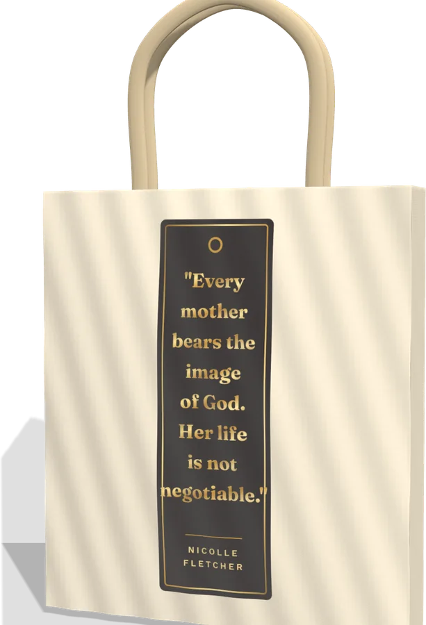
ToteDesignBookmark
Image of God
Line
Image of God
Subtitle
"Every mother bears the image of God. Her life is not negotiable."
Visual
Gold-foil quote under an arch on black, as a poster and a Bible bookmark.
Audience and ask
For faith audiences, including religious Republicans. Bookmarks live in Bibles for years.
Narrative change
Today: "pro-life" stops at birth. This design: the mother's life is sacred too.
Cultural significance
Written by Nicolle Fletcher, doula and visionary of Ujima Maternity Network.
Risk
Permission needed from Nicolle Fletcher.
Track
Both. A strong faith-audience pilot candidate.
Design rationale
The arch is a chapel window. Gold foil is honor.
ExposesThat faith requires control.
Ends atA mother denied care in God's name.
PowerFaith leaders: speak and walk with families this year.
6.7Protect and Provide · the pieces
The Pieces
Who answers to her?
01
Our Grandmas Were Organizers
Honors elders as the original organizers.
Church hand fanPilot and our line
02
Is, Is Not
Reproductive justice is the right to decide.
TeePilot and our line
03
Abortion Is Sacred
Votive light, gold rays.
TeeOur line
04
Front Pew
Ask the one at the front of the church.
TeePilot and our line
05
Sunday, Monday
Going to church on Sunday and escorting my community member to the abortion clinic on Monday.
ToteOur line
07Product line 6.8 · Who already did the work?
Honoring Leaders
The list line. Gold-foil quote graphics of the people doing the work, so we can connect with them by honoring them. Every design carries the veneration phrase.
Because they didn't wait, we won't either.
ResearchVerify the quote and the work.
InviteAsk their organization first.
ApproveWritten consent from the living.
Co-produceMade with them; proceeds to their work.
GiveAt their events and our tour stops.
Report backWhat went out, what came in.
No photos of real people in this version. A photo needs the honoree's written permission.
6.8Honoring Leaders
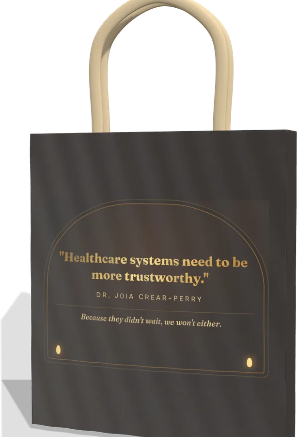
"Healthcare systems need to be more trustworthy."
Dr. Joia Crear-Perry
Because they didn't wait, we won't either.
For the doctor who told the system to earn our trust.
Dr. Joia Crear-Perry
Obstetrician-gynecologist; founder and president, National Birth Equity Collaborative · National; keynote at Black Birth Matters 2026, New Orleans
Former executive director of The Birthing Project. Serves on the boards of Community Catalyst and the National Medical Association. Received the Congressional Black Caucus Healthcare Hero award, per her biography.
U.S. Commission on Civil Rights, November 13, 2020 VerifiedPermission needed
Connect: Lead gold-foil print, co-produced with the National Birth Equity Collaborative, proceeds to its work. Invite her to launch it on the Louisiana stop.
When: Black Maternal Health Week, April
"walk with folks throughout all of their reproductive decisions."
Rev. Angela Williams
Because they didn't wait, we won't either.
For the pastor who walks beside us, every step.
Rev. Angela Williams
Pastor, Presbyterian Church (U.S.A.); lead organizer of SACReD · Place [SOURCE NEEDED]
Quoted by NBC News in its reporting on religious leaders and abortion rights. SACReD's full name and base: [SOURCE NEEDED].
NBC News, undated ReportedPermission needed
Connect: Co-design the faith capsule with her congregations; elders wear it at the next rally.
When:[SOURCE NEEDED]
"We're not only calling for change, we're creating it."
Danielle Atkinson
Because they didn't wait, we won't either.
For the mother of six who builds what she demands.
Mother of six. Mothering Justice launched in 2012 and backs the MI Momnibus bills to close racial gaps in maternal care.
CBS Detroit, April 17, 2025 ReportedPermission needed
Connect: A Lansing edition of Believe Mom co-produced with Mothering Justice and given at its events.
When: Black Maternal Health Week, April; MI Momnibus dates not verified
6.8Honoring Leaders
"Who's going to show up postpartum to cook you some food?"
Nadia Gramby
Because they didn't wait, we won't either.
For the midwife who asks who brings the food.
Nadia Gramby
Certified professional midwife; founder, Crown of Glory Birth Services (2018) · Chelsea and Birmingham, Alabama
Serves families across Alabama by home visits and recently opened a Birmingham office, while midwives challenge the state's licensing rules.
NPR, August 11, 2026 ReportedPermission needed
Connect: Mothers' Keepers and Birth Decolonized pieces given at birth worker events in Birmingham.
When: Birmingham Home Show, February 19 to 21, 2027
"Doulas are essential!"
Esther Rose Louis
Because they didn't wait, we won't either.
For the doula who says it plainly, and loudly.
Esther Rose Louis
Birth and postpartum doula; owner, Metro Mommy Agency · Miami-Dade, South Florida
More than 11 years of doula work in Miami-Dade.
Miami Mom Collective, April 13, 2026 ReportedPermission needed
Connect: A doula honoree print given with the Southern Birth Justice Network, if it approves.
When: South Florida Fair, January 15 to 31, 2027; Black Maternal Health Week, April
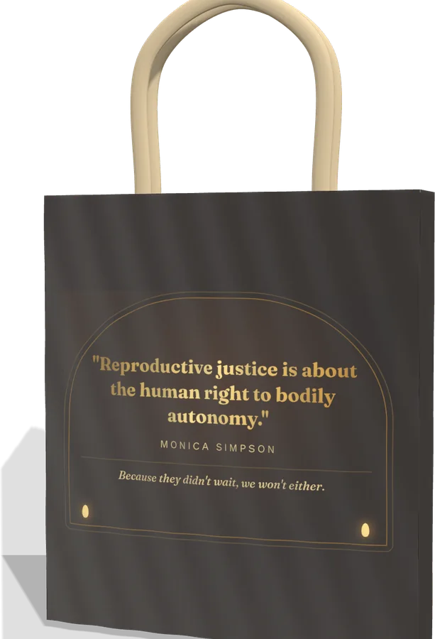
"Reproductive justice is about the human right to bodily autonomy."
Monica Simpson
Because they didn't wait, we won't either.
For the leader who keeps our bodies our own.
Monica Simpson
Executive director, SisterSong · National (Atlanta)
Leads what the Ford Foundation calls "the largest multiethnic reproductive justice collective in the US."
Ford Foundation profile ReportedPermission needed
Connect: National anchor for the Defined slide and the Is, Is Not design; co-branded with SisterSong.
When: Black Maternal Health Week, April
6.8Honoring Leaders
"We don't care about your acceptance or agreement. We just want equity and safe, inclusive care."
Kayden Coleman
Because they didn't wait, we won't either.
For the father who asks for equity and safe care.
Kayden Coleman
Transgender father of two; trans fertility and birth educator · Houston, Texas
Teaches trans fertility and birth workshops to birth workers and advocates for trans people in birth care.
NBC News, undated ReportedPermission needed
Connect: Invite him to review Birthing People, All of Us and co-host a workshop stop.
When:[SOURCE NEEDED]
"I call these the 21st century fathers."
Peter Bullock
Because they didn't wait, we won't either.
For the dad who made room for dads.
Peter Bullock
Founder, Hey Black Dad · New Jersey
Runs a doula practice that supports expectant fathers in person and virtually.
Advocates for Children of New Jersey, June 12, 2024 ReportedPermission needed
Connect: Family Line co-design; dads' workshop at a tour stop.
When:[SOURCE NEEDED]
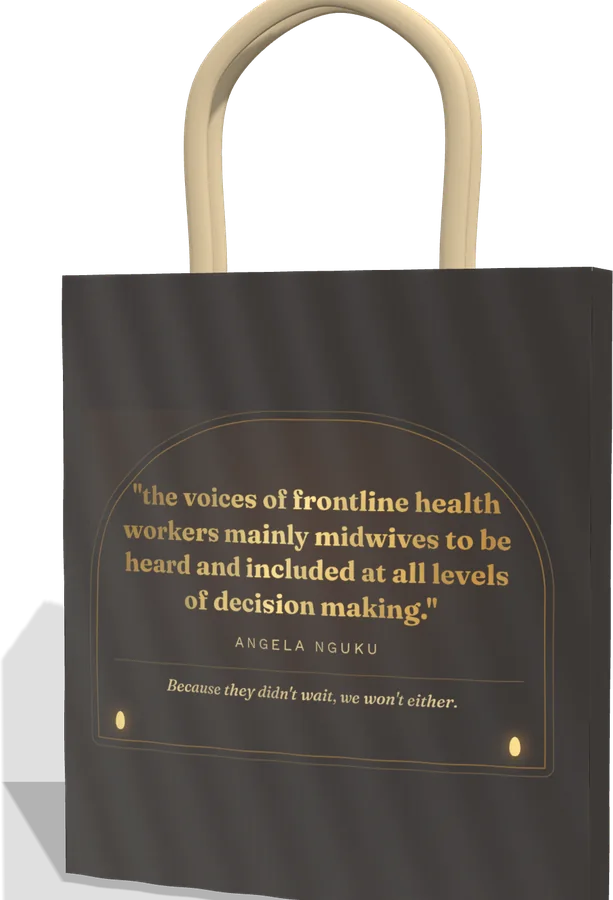
"the voices of frontline health workers mainly midwives to be heard and included at all levels of decision making."
Angela Nguku
Because they didn't wait, we won't either.
For the midwife who carried midwives into the room where decisions are made.
Angela Nguku
National Coordinator, White Ribbon Alliance Kenya; graduate midwife · Kenya; global
More than 15 years as a midwife. Works toward "ending preventable maternal and newborn deaths globally."
Speaker profile, November 11, 2019 ReportedPermission needed
Connect: Mama Lives global print, with a proceeds share to White Ribbon Alliance Kenya.
When:[SOURCE NEEDED]
6.8Honoring Leaders
"Judaism has always been pro-choice."
Rabbi Mara Nathan
Because they didn't wait, we won't either.
For the rabbi who answered in the summit's own city.
Rabbi Mara Nathan
Senior rabbi, Temple Beth-El · San Antonio, Texas
Leads a congregation in the city where the June 2026 summit took place: a faith answer in the summit's own city.
NBC News, undated ReportedPermission needed
Connect: A San Antonio edition of the faith capsule.
When:[SOURCE NEEDED]
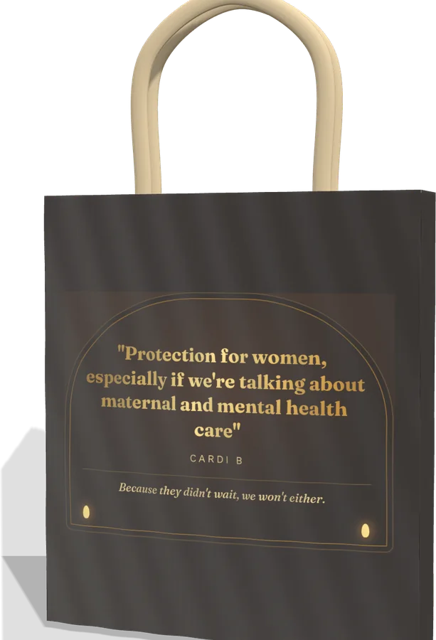
"Protection for women, especially if we're talking about maternal and mental health care"
Cardi B
Because they didn't wait, we won't either.
For the artist who took the mic to talk about mothers.
Cardi B
Recording artist · Spoke at a Kamala Harris rally, Milwaukee
Used a campaign stage to talk about maternal and mental health. Partisan campaign remarks: Needs-review.
AOL, undated ReportedPermission needed
Connect: Pop culture reach for Liner Notes, only with her team's approval.
When:[SOURCE NEEDED]
"EVERY mother, regardless of race, or background deserves to have a healthy pregnancy and childbirth."
Serena Williams
Because they didn't wait, we won't either.
For the champion who said every mother, and meant it.
Serena Williams
Athlete · National
Wrote publicly about pregnancy and childbirth risk on Facebook in January 2018.
Facebook, January 15, 2018, as quoted by the Fader VerifiedPermission needed
Connect: Believe Mom headline honoree, only with her team's approval.
When: Black Maternal Health Week, April
6.8Honoring Leaders
"I see inequity wherever it exists, call it by name, and work to eliminate it."
Dr. Shalon Irving
Because they didn't wait, we won't either.
For the scientist who named inequity, and still teaches us.
Dr. Shalon Irving
Epidemiologist, Centers for Disease Control and Prevention · Died January 2017
A scientist who studied the inequities that took her life. Tribute design. Only her public line is used.
STAT, December 7, 2017 ReportedTribute
Connect: Tribute print in Believe Mom.
When: Black Maternal Health Week, April
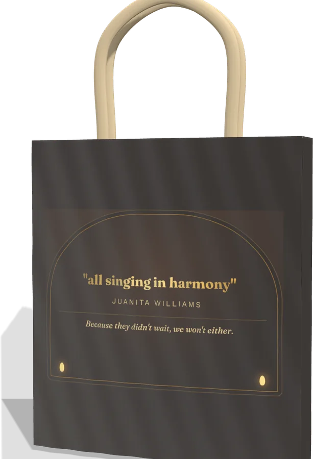
"all singing in harmony"
Juanita Williams
Because they didn't wait, we won't either.
For the founding mother who taught us harmony.
Juanita Williams
Founding mother, SisterSong · Tribute
The Ford Foundation profile says her wish for many voices, "all singing in harmony," is why SisterSong has its name. Tribute design.
Ford Foundation profile ReportedTribute
Connect: Tribute print, proceeds share to SisterSong; ties to Liner Notes.
When: Black Maternal Health Week, April
"Logan, who'd been delivering babies for 35 years, would be the last midwife in Mobile County."
Onnie Lee Logan
Because they didn't wait, we won't either.
For the midwife of Mobile County, and every birth she caught.
Onnie Lee Logan
Midwife, Mobile County, Alabama; author of Motherwit · Tribute
Delivered babies for 35 years. Reckon calls her the last midwife in Mobile County (the article's words). Tribute design.
Reckon, February 2023 (the article's words about her) ReportedTribute
Connect: Birth Decolonized tribute; Alabama tour stop.
When:[SOURCE NEEDED]
6.9Product line
Liner Notes
What do we sing about her?
New line: songs about motherhood, healthy moms, and reproductive freedom. Name options: Liner Notes (recommended: an album's notes, and the line of mothers before us), Mama Said, Lullaby Loud, Side B, Sing It, Mama.
Lyrics are copyrighted. Printing even a short phrase on merchandise needs a license from the publisher. Every lyric below carries a status. Nothing licensed is printed in this deck.
Song
Words
Why
Status
"Sometimes I Feel Like a Motherless Child," traditional spiritual (sung by the Fisk Jubilee Singers in the 1870s)
Sometimes I feel like a motherless child
A song born in slavery about children torn from mothers. Our answer: "No child should be."
Public domain (traditional) Specific arrangements may carry their own copyright.
Songs by artists who speak on maternal health, such as Cardi B
[SOURCE NEEDED]
Her fans are the audience; her rally remarks named maternal care.
License needed
A reproductive freedom anthem I will choose
[SOURCE NEEDED]
Exact words, songwriter, and publisher to be confirmed before any design.
License needed
6.9Liner Notes · public-domain spiritual
Tee
Motherless Child
Line
Motherless Child
Subtitle
No child should be.
Visual
A hymnal page: ruled red lines, "Sometimes I feel like a / MOTHERLESS / child." and a black band: NO CHILD SHOULD BE.
Audience and ask
For church audiences, music lovers, and anyone who knows the song. Asks them to hear it as a call to keep mothers alive.
Narrative change
Today: the song is history. This design: it is still happening, and we can stop it.
Cultural significance
A spiritual from the era of slavery, carried by the Fisk Jubilee Singers and Paul Robeson. Approval: Black church musicians and historians.
Risk
Use the traditional text, not a copyrighted arrangement. Low platform risk.
Track
Both. Strong for faith audiences.
Design rationale
The hymnal page is how congregations hold music. The black band is our answer, printed in the margin.
ExposesThat losing mothers is a sad old story.
Ends atChildren growing up without their mothers today.
PowerEveryone: keep postpartum coverage and care this year.
6.9Liner Notes · licensed lyric format
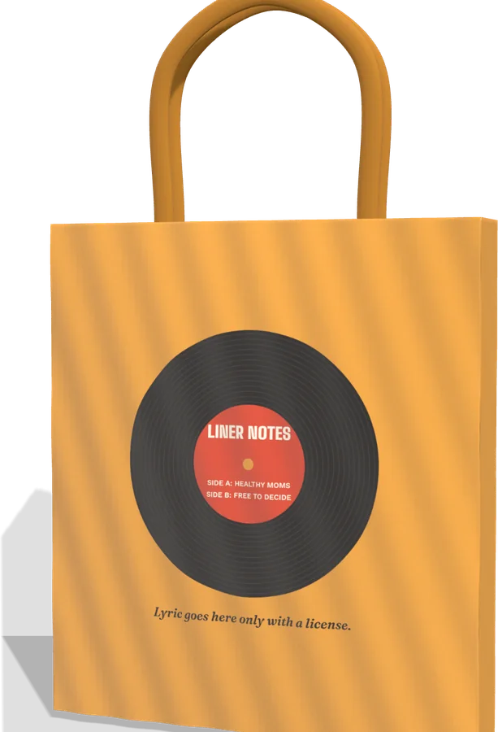
ToteTote and sticker
Side B
Line
Side B
Subtitle
Side A: healthy moms. Side B: free to decide.
Visual
A 45 record on marigold, red label: LINER NOTES. The lyric slot below stays empty until a license is signed.
Audience and ask
For music fans and young people. A tote and sticker system that can carry any licensed lyric.
Narrative change
Today: reproductive freedom is a policy fight. This design: it is a song people already know by heart.
Cultural significance
Music has carried every freedom movement.
Risk
License needed for every lyric. No lyric is printed until then.
Track
Community Shop line.
Design rationale
Side A and Side B hold both halves of the promise: healthy moms and the freedom to decide.
ExposesThat freedom is abstract.
Ends atA decision taken away.
PowerArtists and fans: lend their songs this year.
6.9Liner Notes · the pieces
The Pieces
What do we sing about her?
01
Motherless Child
A traditional spiritual, answered: No child should be.
TeePilot and our line
02
Side B
Side A: healthy moms. Side B: free to decide.
ToteOur line
6.10Product line
Running on Mom Time
Who keeps time for her healing?
The things moms already carry. A tumbler goes to every appointment, every pickup line, every night feed. Pre-natal and Postpartum are public health, and a body heals on its own clock.
Why a tumbler
It is the most-carried object in a new parent's day. It goes to prenatal visits, postpartum checkups, and work. Use is circulation.
The record
Every state except Arkansas now offers 12 months of postpartum coverage, and new work reporting rules could still cost mothers that coverage. Reported
Four variants
One per message, so the pilot can compare take-up and recall side by side.
6.10Running on Mom Time · the pieces
The Pieces
Who keeps time for her healing?
01
Running on mom time.
Pre-natal and Postpartum are public health. You can't rush a body healing.
Steel tumblerPilot and our line
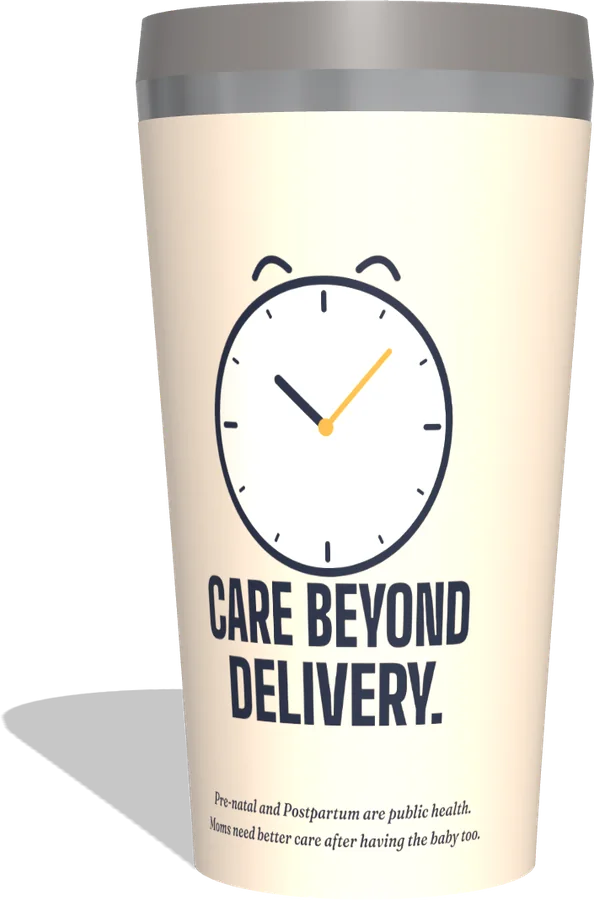
02
Care beyond delivery.
Pre-natal and Postpartum are public health. Moms need better care after having the baby too.
Steel tumblerPilot and our line
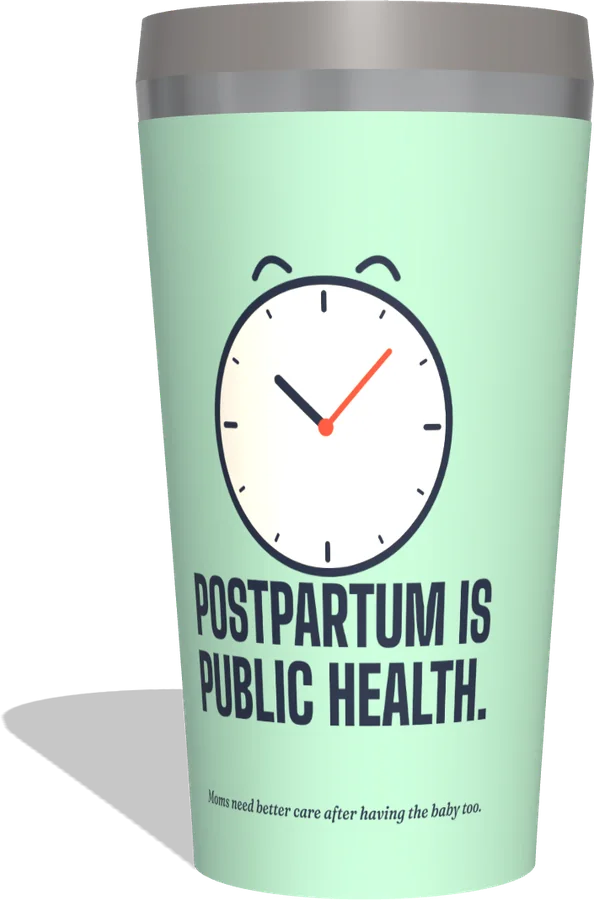
03
Postpartum is public health.
Moms need better care after having the baby too.
Steel tumblerPilot and our line
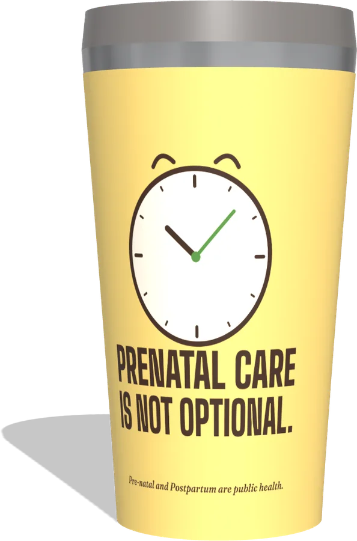
04
Prenatal Care Is Not Optional.
Pre-natal and Postpartum are public health.
Steel tumblerPilot and our line
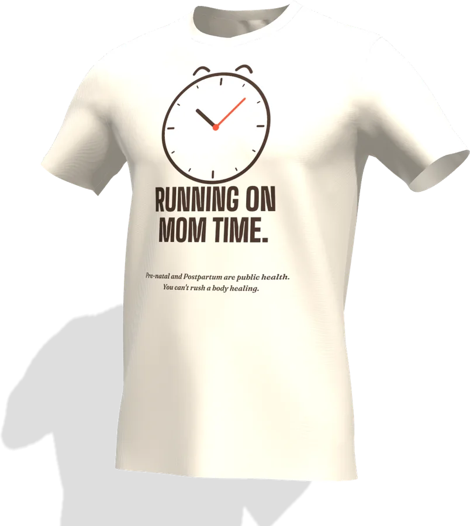
05
Running on mom time.
You can't rush a body healing.
TeePilot and our line
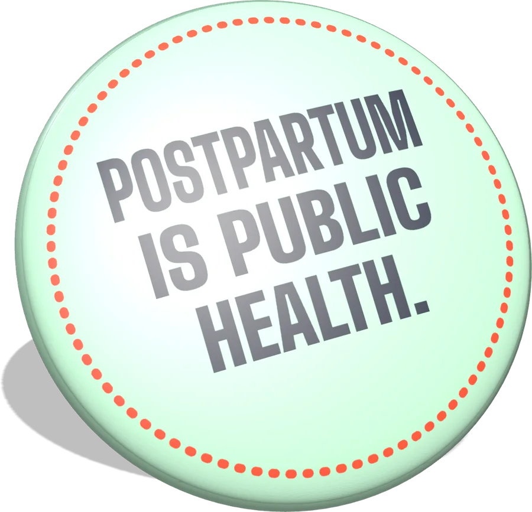
06
Postpartum is public health.
Moms need better care after having the baby too.
ButtonPilot and our line
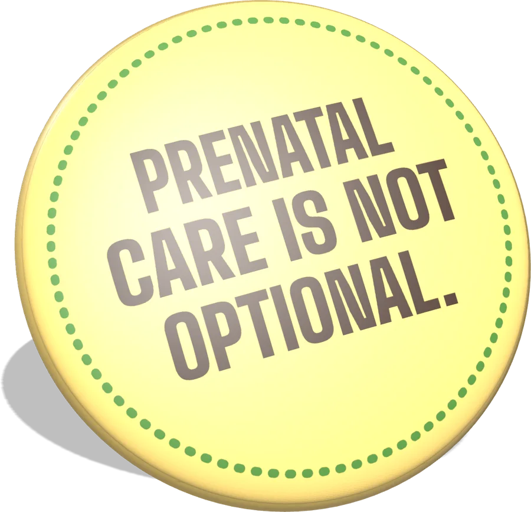
07
Prenatal Care Is Not Optional.
Pre-natal and Postpartum are public health.
ButtonPilot and our line
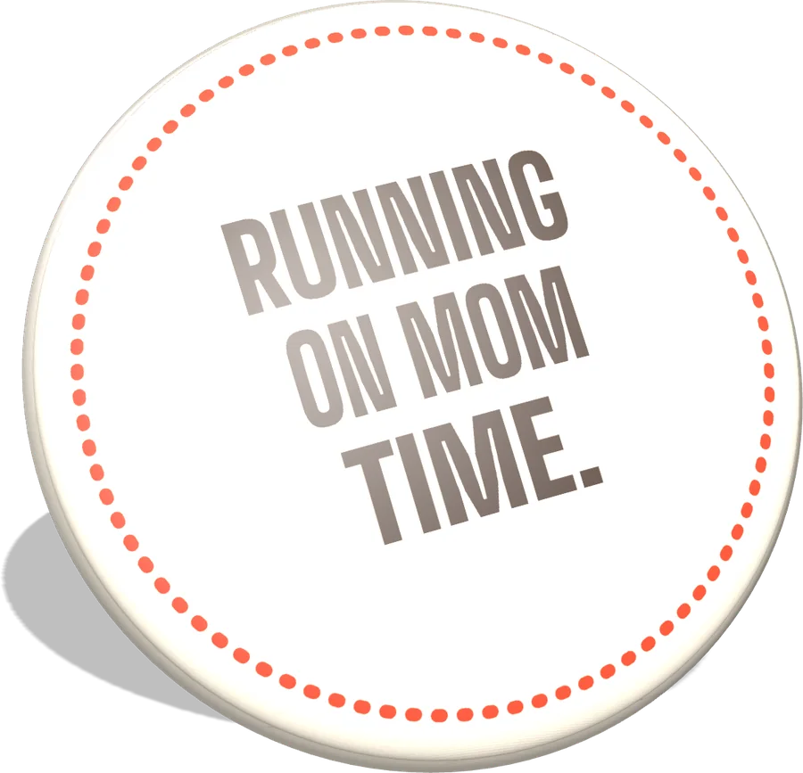
08
Running on mom time.
You can't rush a body healing.
ButtonPilot and our line
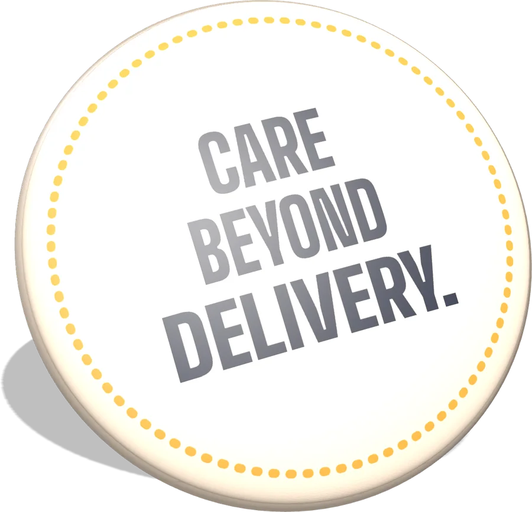
09
Care beyond delivery.
Moms need better care after having the baby too.
ButtonPilot and our line
6.11Product line
Babies and Kids
Who grows up with her?
Next-generation pieces. A kid says what grown-ups cannot, and every photo of that kid carries the message.
KEEP MY MOM AROUND.
6.11Babies and Kids · the pieces
The Pieces
Who grows up with her?
01
KEEP MY MOM AROUND
Hand-lettered, crayon-loose.
Infant bodysuitPilot and our line
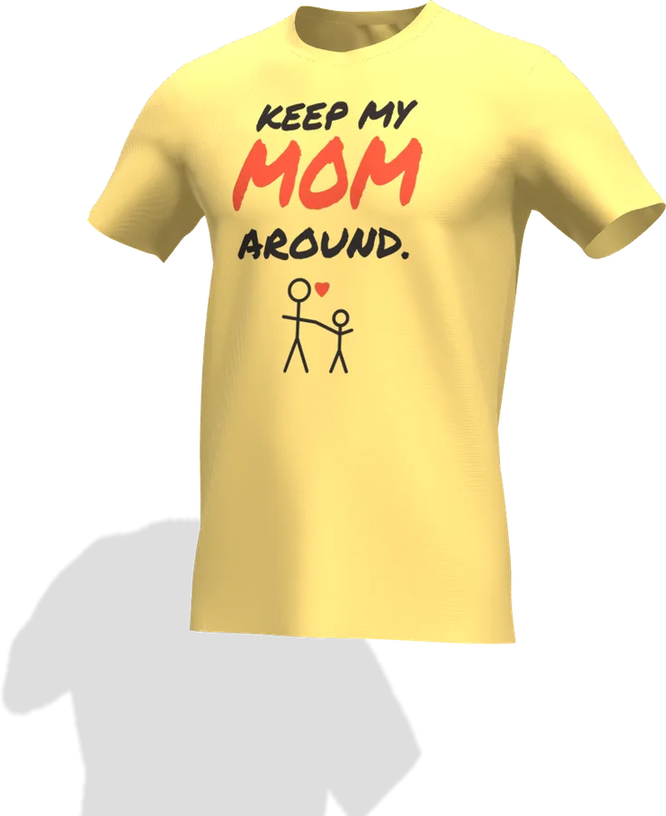
02
KEEP MY MOM AROUND
A kid holding a grown-up's hand.
Toddler teePilot and our line
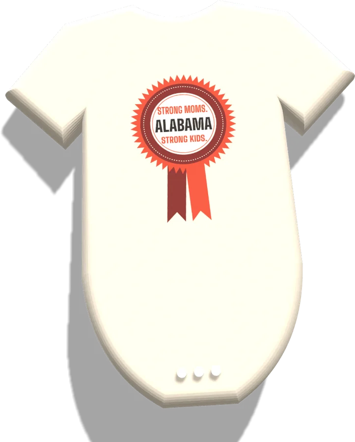
03
Strong Moms. Strong Kids.
A state fair rosette for each tour state.
Infant bodysuitPilot and our line
6.12Product line
Activist Pet Items
Who else is at the park?
Humor for the dog park circuit. Strangers talk to the dog first, then they read the bandana.
Always last on the table, and always the first thing people laugh at.
6.12Activist Pet Items · the pieces
The Pieces
Who else is at the park?
01
My Human Supports Maternal Justice
Paw print, small heart, big ask.
Dog bandanaPilot and our line
02
My Human Supports Maternal Justice
Clips to every leash.
Waste bag dispenserPilot and our line
08The tour
Six States
The tour does not start with a product. It starts with the honoree: we make the quote graphic, ask their organization to co-produce it, and give it at their events. The product is a way into their community, not a way around it.
My seed line: "Strong moms. [State]. Strong kids / families / communities." Each state's rosette carries one ending; the pilot rotates all three.
08Tour stop
Louisiana
17.9maternal deaths per 100,000 live births, ages 20 to 24, 2020 to 2024
What is happening
Black Birth Matters 2026, New Orleans, October 1 to 4, tenth anniversary; Sunday cancelled by flash flooding. Our Lineage tour rescheduled to October 25, 2026. Maternal Health Fund goal: $100,000 (outcome not verified).
Birth Decolonized, Loving Earth (the flood), Honoring Leaders
When
October 25, 2026 (Our Lineage). No indoor winter consumer event found (Gap).
08Tour stop
Alabama
17.1maternal deaths per 100,000 live births, ages 20 to 24, 2020 to 2024
What is happening
Midwives are suing over restrictive licensing. More than half of U.S. counties lack hospital labor and delivery. A 1982 Alabama law barred certifying new midwives (reported; verify).
People to lift
Nadia Gramby (Birmingham); Onnie Lee Logan (tribute, Mobile County)
Lines for this place
Mothers' Keepers, Birth Decolonized, Our Grandmas
When
Birmingham Home Show, February 19 to 21, 2027
08Tour stop
Michigan
11.5maternal deaths per 100,000 live births, ages 20 to 24, 2020 to 2024
What is happening
Mothering Justice (launched 2012) backs the MI Momnibus bills. A Michigan brief (September 2025) covers barriers for disabled mothers.
People to lift
Danielle Atkinson; Tamika Jackson, who shared her birth story with lawmakers in Lansing
Lines for this place
Believe Mom (Lansing edition), Healthy Mothers
When
Novi Home Show, January 15 to 17, 2027 (listing; confirm); Black Maternal Health Week, April
08Tour stop
South Florida
12.6maternal deaths per 100,000 live births, ages 20 to 24, 2020 to 2024
What is happening
The Southern Birth Justice Network leads the three-year Miami Birth Justice Initiative for accountability at Jackson Health System. Its leader's name [SOURCE NEEDED].
People to lift
Esther Rose Louis; Rebekah Antoine (title not stated)
Lines for this place
Believe Mom (Jackson accountability, only with approval), Abuela (bilingual)
When
South Florida Fair, January 15 to 31, 2027
08Tour stop
California
14.3maternal deaths per 100,000 live births, ages 20 to 24, 2020 to 2024
What is happening
The Coalition of Black Birth Justice Leaders received a $150,000 Health Net grant (February 2022). A Sacramento Black birth equity summit took place in November 2025.
People to lift
Leaders [SOURCE NEEDED]
Lines for this place
To be verified. Strong moms rosette only.
When
World Ag Expo, Tulare, February 9 to 11, 2027. Certificate of insurance due October 31, 2026.
08Tour stop
Utah
No datamaternal deaths per 100,000 live births, ages 20 to 24, 2020 to 2024
What is happening
Rate suppressed or missing. Postpartum coverage: a February 2026 Georgetown headline names Arkansas as the only state without the 12-month extension; confirm Utah directly.
People to lift
Sequoia Kemp, a doula who "advocates for radical change" (KPCW headline, August 2022); Carmen Mojica (directory; unverified)
Lines for this place
To be verified. Strong moms rosette and KEEP MY MOM AROUND.
When
Salt Lake Home Show, January 8 to 10, 2027 (listing; confirm)
09Global link
Country to Country
Maternal deaths, 2000
443,000
Maternal deaths, 2023
260,000
Ratio, 2000 (per 100,000 births)
328
Ratio, 2023
197
Share in Sub-Saharan Africa
70%
Share in 37 conflict or fragile countries
64%
The same forces cross borders: distance from care, too few midwives, conflict, heat, and whether anyone listens. A U.S. county with no delivery room and a village without a midwife are the same problem at different scales.
Progress has slowed to 1.5 percent a year since 2016. The proposal's claim that this is a "successful and cost effective investment" stays out until it has a source [SOURCE NEEDED].
10How we learn
What Works
The merchandise is free, so the design itself has to carry the test. Message variants hang side by side at every event, and we measure past the free item.
Side by side
Matched pairs on the same product: "mothers" against "mothers and birthing people," the race line in or out. One change at a time.
Pick, then ask
Visitors pick an item first. A 90-second survey follows, on recall, comprehension, and how much it matters to them, before we teach anything.
Five instruments
Take-up by variant, intercept surveys, staff observation, organic social posts, and a written report ranking the messages, with the reasoning.
Cost per person engaged
Event fees, travel, staff, merchandise, and materials, divided by the people who picked an item or finished the survey.
Read it honestly
Fairgoers are not a representative sample. Results are directional.
Disclosure
How the foundation is shown at the stall is decided before the first event.
11Cultural design strategy
The Craft
Type
Designers
License
Link
Vocal Type Co.
Tré Seals, founded 2016; typefaces by creatives of color, named for social justice advocates (for example, Martin, from 1968 Memphis sanitation strike signs)
Gold for honor and veneration. Deep red for death and the record. Green for growth, going home, and the earth. No red-versus-blue pairings.
Calls to action from organizing
Check on her. Ask me how. Show up. Walk her in. Vote for the people you love. Count them. Say her name only with her family's blessing.
Artists' work
Every graphic here is original. Quilt and papel picado designs are original takes and say so, with a consult note. No artist's work is used without written permission naming the work and license.
12Message bank
On Everything
Shirts
Believe Mom.
EVERY MOTHER deserves to come home.
HEALTHY MOTHERS.
I keep moms safe. Ask me how.
Birthing people, all of us.
ABUELA KNEW MUTUAL AID
Mama Lives.
Our Grandmas Were Organizers.
Ask the One at the Abortion Clinic.
Hats
"Real" men give a damn about maternal health.
Mothers' Keepers
Strong moms. [State]. Strong families.
Stickers
Patriarchy won't trick me into hating myself. It won't trick me into hating you.
One degree.
712 a day.
Ask me how.
Totes
Our Grandmas Were Organizers.
Patriarchy won't trick me into hating myself or you.
Birth Decolonized.
Loving Earth, Our Mother.
Patches and pins
Mothers' Keepers
I care about my trans kid.
Strong moms. [State]. Strong kids.
Birth is Sacred and abortion is too.
Children's items
KEEP MY MOM AROUND
Strong moms. [State]. Strong kids.
Healthy mothers.
Signs and fans
"Real" men don't vote against the people they love.
Going to church on Sunday and escorting my community member to the abortion clinic on Monday.
Ask the one at the front of the church.
Every line is mine or grows from my lines. Each is tagged by line and track on its design card.
13Sources
Sources
Verified: source checked. Reported: a source states it, read in summary or relayed in my research. Unverified: do not cite externally. Gap: nothing usable found.
National Center for Health Statistics, Health E-Stat 113, March 2026 Verified
U.S. Commission on Civil Rights, Crear-Perry testimony, November 13, 2020 Verified
Fader, Serena Williams post, January 16, 2018 Verified
Trends in Maternal Mortality 2000 to 2023, United Nations interagency group, April 7, 2025, via United Nations Population Fund and UNICEF pages Reported
CBC; The Atlantic; The Nation, June 2026 Reported
Democracy Docket, April 2026; PBS NewsHour Reported
Georgetown Center for Children and Families, February 27 and July 17, 2026 Reported
Centers for Medicare and Medicaid Services press release on Oklahoma's postpartum extension Reported
First Focus, Babies in the Budget, December 2025 Reported
George Washington University, 2026 Maternal Mental Health State Report Cards Reported
March of Dimes on federal data, March 2026; report, August 11, 2026, via NPR Reported
Chersich et al., BMJ, 2020, doi 10.1136/bmj.m3811 Reported
London School of Hygiene and Tropical Medicine and Missing Billion Initiative, March 2025 Reported
LGBT Foundation, ITEMS report, 2022 Reported
Mississippi Free Press, Michael Murphy, June 2021 Reported
NBC News, faith leaders; trans parents (undated) Reported
STAT, December 7, 2017 Reported
NPR via WAMC, August 11, 2026 Reported
CBS Detroit, April 17, 2025 Reported
Miami Mom Collective, April 13, 2026 Reported
Ford Foundation, Monica Simpson profile Reported
Word&Way, Nicolle and Phillip D. Fletcher (undated) Reported
Advocates for Children of New Jersey, June 12, 2024 Reported
Boston Medical Center and HealthCity Reported
Center for Health Journalism, March 13, 2026 Reported
Reckon, February 2023 Reported
White Ribbon Alliance Kenya profile, November 11, 2019 Reported
AOL, Cardi B remarks (undated) Reported
Pew Research Center, January 2026 Reported
WESA, August 4, 2025 Reported
Becker's Hospital Review, December 18, 2025 Reported
NPR, September 30, 2026; Guardian, September 15, 2026 Reported
Black Birth Matters 2026 event page Reported
Demos, Race Class Narrative reports Reported
FrameWorks Institute, Strategic Frame Analysis Reported
Feinberg and Willer, 2012; Kalla and Broockman, 2022 Reported
America's Health Rankings, 2020 to 2024 Reported
Ypulse, mothers on TikTok (undated) Unverified
Savannah Stone podcast quote, 2025 Unverified
My summit video transcript Unverified
Event listings: BJCC, South Florida Fair, World Ag Expo, Novi and Salt Lake aggregators Reported
Causal claim in Believe Mom subtitle; 2026 TV and music moments; U.S. queer parents study Gap
Typefaces in this deck
Big Shoulders Display (Patric King, SIL Open Font License); Fraunces (Undercase Type, SIL Open Font License); Work Sans (Wei Huang, SIL Open Font License); Permanent Marker (Font Diner, Apache License 2.0). All via Google Fonts.